Note
The contents of this document are presented in good faith and are believed to be mostly correct and accurate, however they have not yet been rigorously checked for errors. June2015
SasView Model Functions
1. Background
Many of our models use the form factor calculations implemented in a c-library provided by the NIST Center for Neutron Research and thus some content and figures in this document are originated from or shared with the NIST SANS Igor-based analysis package.
This software provides form factors for various particle shapes. After giving a mathematical definition of each model, we show the list of parameters available to the user. Validation plots for each model are also presented.
Instructions on how to use SasView itself are available separately.
To easily compare to the scattering intensity measured in experiments, we normalize the form factors by the volume of the particle
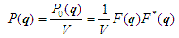with
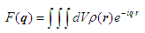where P0(q) is the un-normalized form factor, ρ(r) is the scattering length density at a given point in space and the integration is done over the volume V of the scatterer.
For systems without inter-particle interference, the form factors we provide can be related to the scattering intensity by the particle volume fraction
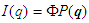Our so-called 1D scattering intensity functions provide P(q) for the case where the scatterer is randomly oriented. In that case, the scattering intensity only depends on the length of q . The intensity measured on the plane of the SAS detector will have an azimuthal symmetry around q=0 .
Our so-called 2D scattering intensity functions provide P(q, φ ) for an oriented system as a function of a q-vector in the plane of the detector. We define the angle φ as the angle between the q vector and the horizontal (x) axis of the plane of the detector.
For information about polarised and magnetic scattering, click here.
2. Model functions
2.1 Shape-based Functions
Sphere-based
- SphereModel (including magnetic 2D version)
- BinaryHSModel
- FuzzySphereModel
- RaspBerryModel
- CoreShellModel (including magnetic 2D version)
- MicelleSphCoreModel
- CoreMultiShellModel (including magnetic 2D version)
- Core2ndMomentModel
- MultiShellModel
- OnionExpShellModel
- VesicleModel
- SphericalSLDModel
- LinearPearlsModel
- PearlNecklaceModel
Cylinder-based
Ellipsoid-based
Paracrystals
Parallelpipeds
- ParallelepipedModel (including magnetic 2D version)
- CSParallelepipedModel
- RectangularPrismModel
- RectangularHollowPrismModel
- RectangularHollowPrismInfThinWallsModel
2.2 Shape-Independent Functions
(In alphabetical order)
- AbsolutePower_Law
- BEPolyelectrolyte
- BroadPeakModel
- CorrLength
- DABModel
- Debye
- FractalModel
- FractalCoreShell
- GaussLorentzGel
- GelFitModel
- Guinier
- GuinierPorod
- LineModel
- Lorentz
- MassFractalModel
- MassSurfaceFractal
- PeakGaussModel
- PeakLorentzModel
- Poly_GaussCoil
- PolyExclVolume
- PorodModel
- RPA10Model
- StarPolymer
- SurfaceFractalModel
- TeubnerStrey
- TwoLorentzian
- TwoPowerLaw
- UnifiedPowerRg
- ReflectivityModel
- ReflectivityIIModel
2.3 Structure Factor Functions
2.4 Customized Functions
Also see the documentation on Adding your own models under Fitting Data.
3. References
Small-Angle Scattering of X-Rays A Guinier and G Fournet John Wiley & Sons, New York (1955)
P Stckel, R May, I Strell, Z Cejka, W Hoppe, H Heumann, W Zillig and H Crespi Eur. J. Biochem., 112, (1980), 411-417
G Porod in Small Angle X-ray Scattering (editors) O Glatter and O Kratky Academic Press (1982)
Structure Analysis by Small-Angle X-Ray and Neutron Scattering L.A Feigin and D I Svergun Plenum Press, New York (1987)
S Hansen J. Appl. Cryst. 23, (1990), 344-346
S J Henderson Biophys. J. 70, (1996), 1618-1627
B C McAlister and B P Grady J. Appl. Cryst. 31, (1998), 594-599
S R Kline J Appl. Cryst. 39(6), (2006), 895
Also see the references at the end of the each model function descriptions.
Model Definitions
2.1.1. SphereModel
This model provides the form factor, P(q), for a monodisperse spherical particle with uniform scattering length density. The form factor is normalized by the particle volume as described below.
For information about polarised and magnetic scattering, click here.
2.1.1.1. Definition
The 1D scattering intensity is calculated in the following way (Guinier, 1955)
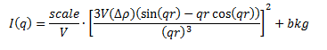where scale is a volume fraction, V is the volume of the scatterer, r is the radius of the sphere, bkg is the background level and sldXXX is the scattering length density (SLD) of the scatterer or the solvent.
Note that if your data is in absolute scale, the scale should represent the volume fraction (which is unitless) if you have a good fit. If not, it should represent the volume fraction * a factor (by which your data might need to be rescaled).
The 2D scattering intensity is the same as above, regardless of the orientation of the q vector.
The returned value is scaled to units of cm-1 and the parameters of the SphereModel are the following:
| Parameter name | Units | Default value |
|---|---|---|
| scale | None | 1 |
| radius | Å | 60 |
| sldSph | Å-2 | 2.0e-6 |
| sldSolv | Å-2 | 1.0e-6 |
| background | cm-1 | 0 |
Our model uses the form factor calculations implemented in a c-library provided by the NIST Center for Neutron Research (Kline, 2006).
REFERENCE
A Guinier and G. Fournet, Small-Angle Scattering of X-Rays, John Wiley and Sons, New York, (1955)
2.1.1.2. Validation of the SphereModel
Validation of our code was done by comparing the output of the 1D model to the output of the software provided by the NIST (Kline, 2006). Figure 1 shows a comparison of the output of our model and the output of the NIST software.
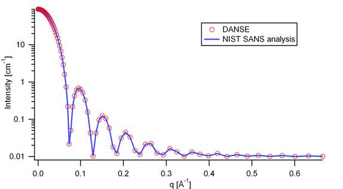Figure 1: Comparison of the DANSE scattering intensity for a sphere with the output of the NIST SANS analysis software. The parameters were set to: Scale=1.0, Radius=60 Å, Contrast=1e-6 Å-2, and Background=0.01 cm-1.
2013/09/09 and 2014/01/06 - Description reviewed by S King and P Parker.
2.1.2. BinaryHSModel
2.1.2.1. Definition
This model (binary hard sphere model) provides the scattering intensity, for binary mixture of spheres including hard sphere interaction between those particles. Using Percus-Yevick closure, the calculation is an exact multi-component solution
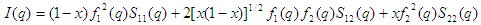where Sij are the partial structure factors and fi are the scattering amplitudes of the particles. The subscript 1 is for the smaller particle and 2 is for the larger. The number fraction of the larger particle, (x = n2/(n1+n2), where n = the number density) is internally calculated based on
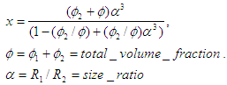The 2D scattering intensity is the same as 1D, regardless of the orientation of the q vector which is defined as
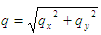The parameters of the BinaryHSModel are the following (in the names, l (or ls) stands for larger spheres while s (or ss) for the smaller spheres).
| Parameter name | Units | Default value |
|---|---|---|
| background | cm-1 | 0.001 |
| l_radius | Å | 100.0 |
| ss_sld | Å-2 | 0.0 |
| ls_sld | Å-2 | 3e-6 |
| solvent_sld | Å-2 | 6e-6 |
| s_radius | Å | 25.0 |
| vol_frac_ls | None | 0.1 |
| vol_frac_ss | None | 0.2 |
Figure. 1D plot using the default values above (w/200 data point).
Our model uses the form factor calculations implemented in a c-library provided by the NIST Center for Neutron Research (Kline, 2006).
See the reference for details.
REFERENCE
N W Ashcroft and D C Langreth, Physical Review, 156 (1967) 685-692 [Errata found in Phys. Rev. 166 (1968) 934]
2.1.3. FuzzySphereModel
This model is to calculate the scattering from spherical particles with a “fuzzy” interface.
2.1.3.1. Definition
The scattering intensity I(q) is calculated as:
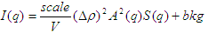where the amplitude A(q) is given as the typical sphere scattering convoluted with a Gaussian to get a gradual drop-off in the scattering length density
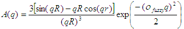Here A2(q) is the form factor, P(q). The scale is equivalent to the volume fraction of spheres, each of volume, V. Contrast (Δρ) is the difference of scattering length densities of the sphere and the surrounding solvent.
Poly-dispersion in radius and in fuzziness is provided for.
The returned value is scaled to units of cm-1sr-1; ie, absolute scale.
From the reference
The “fuzziness” of the interface is defined by the parameter σ fuzzy. The particle radius R represents the radius of the particle where the scattering length density profile decreased to 1/2 of the core density. The σ fuzzyis the width of the smeared particle surface; i.e., the standard deviation from the average height of the fuzzy interface. The inner regions of the microgel that display a higher density are described by the radial box profile extending to a radius of approximately Rbox ~ R - 2σ. The profile approaches zero as Rsans ~ R + 2σ.
For 2D data: The 2D scattering intensity is calculated in the same way as 1D, where the q vector is defined as
This example dataset is produced by running the FuzzySphereModel, using 200 data points, qmin = 0.001 -1, qmax = 0.7 Å-1 and the default values
| Parameter name | Units | Default value |
|---|---|---|
| scale | None | 1.0 |
| radius | Å | 60 |
| fuzziness | Å | 10 |
| sldSolv | Å-2 | 3e-6 |
| sldSph | Å-2 | 1e-6 |
| background | cm-1 | 0.001 |
Figure. 1D plot using the default values (w/200 data point).
REFERENCE
M Stieger, J. S Pedersen, P Lindner, W Richtering, Langmuir, 20 (2004) 7283-7292
2.1.4. RaspBerryModel
Calculates the form factor, P(q), for a “Raspberry-like” structure where there are smaller spheres at the surface of a larger sphere, such as the structure of a Pickering emulsion.
2.1.4.1. Definition
The structure is:

where Ro = the radius of the large sphere, Rp = the radius of the smaller sphere on the surface, δ = the fractional penetration depth, and surface coverage = fractional coverage of the large sphere surface (0.9 max).
The large and small spheres have their own SLD, as well as the solvent. The surface coverage term is a fractional coverage (maximum of approximately 0.9 for hexagonally-packed spheres on a surface). Since not all of the small spheres are necessarily attached to the surface, the excess free (small) spheres scattering is also included in the calculation. The function calculated follows equations (8)-(12) of the reference below, and the equations are not reproduced here.
The returned value is scaled to units of cm-1. No inter-particle scattering is included in this model.
For 2D data: The 2D scattering intensity is calculated in the same way as 1D, where the q vector is defined as
This example dataset is produced by running the RaspBerryModel, using 2000 data points, qmin = 0.0001 Å-1, qmax = 0.2 Å-1 and the default values below, where Ssph/Lsph stands for smaller or larger sphere, respectively, and surfrac_Ssph is the surface fraction of the smaller spheres.
| Parameter name | Units | Default value |
|---|---|---|
| delta_Ssph | None | 0 |
| radius_Lsph | Å | 5000 |
| radius_Ssph | Å | 100 |
| sld_Lsph | Å-2 | -4e-07 |
| sld_Ssph | Å-2 | 3.5e-6 |
| sld_solv | Å-2 | 6.3e-6 |
| surfrac_Ssph | None | 0.4 |
| volf_Lsph | None | 0.05 |
| volf_Lsph | None | 0.005 |
| background | cm-1 | 0 |
Figure. 1D plot using the values of /2000 data points.
REFERENCE
K Larson-Smith, A Jackson, and D C Pozzo, Small angle scattering model for Pickering emulsions and raspberry particles, Journal of Colloid and Interface Science, 343(1) (2010) 36-41
2.1.5. CoreShellModel
This model provides the form factor, P(q), for a spherical particle with a core-shell structure. The form factor is normalized by the particle volume.
For information about polarised and magnetic scattering, click here.
2.1.5.1. Definition
The 1D scattering intensity is calculated in the following way (Guinier, 1955)
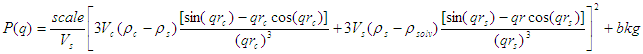where scale is a scale factor, Vs is the volume of the outer shell, Vc is the volume of the core, rs is the radius of the shell, rc is the radius of the core, c is the scattering length density of the core, s is the scattering length density of the shell, solv is the scattering length density of the solvent, and bkg is the background level.
The 2D scattering intensity is the same as P(q) above, regardless of the orientation of the q vector.
NB: The outer most radius (ie, = radius + thickness) is used as the effective radius for S(Q) when P(Q) * S(Q) is applied.
The returned value is scaled to units of cm-1 and the parameters of the CoreShellModel are the following
| Parameter name | Units | Default value |
|---|---|---|
| scale | None | 1.0 |
| (core) radius | Å | 60 |
| thickness | Å | 10 |
| core_sld | Å-2 | 1e-6 |
| shell_sld | Å-2 | 2e-6 |
| solvent_sld | Å-2 | 3e-6 |
| background | cm-1 | 0.001 |
Here, radius = the radius of the core and thickness = the thickness of the shell.
Our model uses the form factor calculations implemented in a c-library provided by the NIST Center for Neutron Research (Kline, 2006).
REFERENCE
A Guinier and G Fournet, Small-Angle Scattering of X-Rays, John Wiley and Sons, New York, (1955)
2.1.5.2. Validation of the core-shell sphere model
Validation of our code was done by comparing the output of the 1D model to the output of the software provided by NIST (Kline, 2006). Figure 1 shows a comparison of the output of our model and the output of the NIST software.
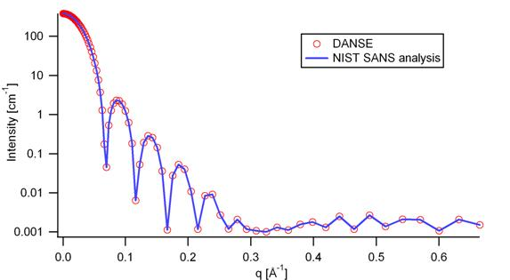Figure 1: Comparison of the SasView scattering intensity for a core-shell sphere with the output of the NIST SANS analysis software. The parameters were set to: Scale = 1.0, Radius = 60 , Contrast = 1e-6 Å-2, and Background = 0.001 cm-1.
2.1.6. CoreMultiShellModel
This model provides the scattering from a spherical core with 1 to 4 concentric shell structures. The SLDs of the core and each shell are individually specified.
For information about polarised and magnetic scattering, click here.
2.1.6.1. Definition
This model is a trivial extension of the CoreShell function to a larger number of shells. See the CoreShell function for a diagram and documentation.
The returned value is scaled to units of cm-1sr-1, absolute scale.
Be careful! The SLDs and scale can be highly correlated. Hold as many of these parameters fixed as possible.
The 2D scattering intensity is the same as P(q) of 1D, regardless of the orientation of the q vector.
NB: The outer most radius (ie, = radius + 4 thicknesses) is used as the effective radius for S(Q) when P(Q) * S(Q) is applied.
The returned value is scaled to units of cm-1 and the parameters of the CoreMultiShell model are the following
| Parameter name | Units | Default value |
|---|---|---|
| scale | None | 1.0 |
| rad_core | Å | 60 |
| sld_core | Å-2 | 6.4e-6 |
| sld_shell1 | Å-2 | 1e-6 |
| sld_shell2 | Å-2 | 2e-6 |
| sld_shell3 | Å-2 | 3e-6 |
| sld_shell4 | Å-2 | 4e-6 |
| sld_solv | Å-2 | 6.4e-6 |
| thick_shell1 | Å | 10 |
| thick_shell2 | Å | 10 |
| thick_shell3 | Å | 10 |
| thick_shell4 | Å | 10 |
| background | cm-1 | 0.001 |
NB: Here, rad_core = the radius of the core, thick_shelli = the thickness of the shell i and sld_shelli = the SLD of the shell i. sld_core and the sld_solv are the SLD of the core and the solvent, respectively.
Our model uses the form factor calculations implemented in a c-library provided by the NIST Center for Neutron Research (Kline, 2006).
This example dataset is produced by running the CoreMultiShellModel using 200 data points, qmin = 0.001 -1, qmax = 0.7 -1 and the above default values.
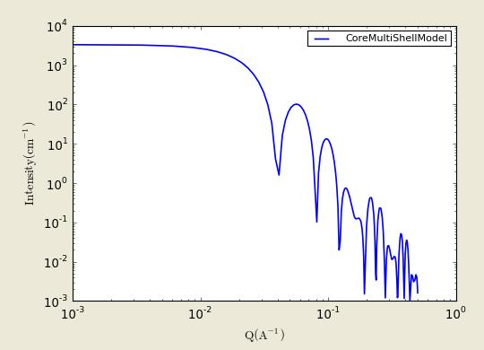Figure: 1D plot using the default values (w/200 data point).
The scattering length density profile for the default sld values (w/ 4 shells).

Figure: SLD profile against the radius of the sphere for default SLDs.
REFERENCE
See the CoreShellModel documentation.
2.1.7. Core2ndMomentModel
This model describes the scattering from a layer of surfactant or polymer adsorbed on spherical particles under the conditions that (i) the particles (cores) are contrast-matched to the dispersion medium, (ii) S(Q) ~ 1 (ie, the particle volume fraction is dilute), (iii) the particle radius is >> layer thickness (ie, the interface is locally flat), and (iv) scattering from excess unadsorbed adsorbate in the bulk medium is absent or has been corrected for.
Unlike a core-shell model, this model does not assume any form for the density distribution of the adsorbed species normal to the interface (cf, a core-shell model which assumes the density distribution to be a homogeneous step-function). For comparison, if the thickness of a (core-shell like) step function distribution is t, the second moment, σ = sqrt((t 2 )/12). The σ is the second moment about the mean of the density distribution (ie, the distance of the centre-of-mass of the distribution from the interface).
2.1.7.1. Definition
The I 0 is calculated in the following way (King, 2002)
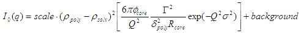where scale is a scale factor, poly is the sld of the polymer (or surfactant) layer, solv is the sld of the solvent/medium and cores, φcores is the volume fraction of the core paraticles, and Γ and δ are the adsorbed amount and the bulk density of the polymers respectively. The σ is the second moment of the thickness distribution.
Note that all parameters except the σ are correlated for fitting so that fitting those with more than one parameter will generally fail. Also note that unlike other shape models, no volume normalization is applied to this model (the calculation is exact).
The returned value is scaled to units of cm-1 and the parameters are the following
| Parameter name | Units | Default value |
|---|---|---|
| scale | None | 1.0 |
| density_poly | g/cm2 | 0.7 |
| radius_core | Å | 500 |
| ads_amount | mg/m 2 | 1.9 |
| second_moment | Å | 23.0 |
| volf_cores | None | 0.14 |
| sld_poly | Å-2 | 1.5e-6 |
| sld_solv | Å-2 | 6.3e-6 |
| background | cm-1 | 0.0 |
REFERENCE
S King, P Griffiths, J. Hone, and T Cosgrove, SANS from Adsorbed Polymer Layers, Macromol. Symp., 190 (2002) 33-42
2.1.8. MultiShellModel
This model provides the form factor, P(q), for a multi-lamellar vesicle with N shells where the core is filled with solvent and the shells are interleaved with layers of solvent. For N = 1, this returns the VesicleModel (above).

The 2D scattering intensity is the same as 1D, regardless of the orientation of the q vector which is defined as
NB: The outer most radius (= core_radius + n_pairs * s_thickness + (n_pairs - 1) * w_thickness) is used as the effective radius for S(Q) when P(Q) * S(Q) is applied.
The returned value is scaled to units of cm-1 and the parameters of the MultiShellModel are the following
| Parameter name | Units | Default value |
|---|---|---|
| scale | None | 1.0 |
| core_radius | Å | 60.0 |
| n_pairs | None | 2.0 |
| core_sld | Å-2 | 6.3e-6 |
| shell_sld | Å-2 | 0.0 |
| background | cm-1 | 0.0 |
| s_thickness | Å | 10 |
| w_thickness | Å | 10 |
NB: s_thickness is the shell thickness while the w_thickness is the solvent thickness, and n_pair is the number of shells.
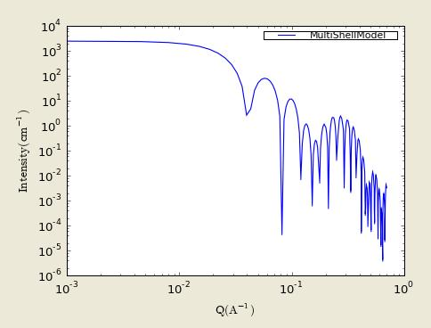Figure. 1D plot using the default values (w/200 data point).
Our model uses the form factor calculations implemented in a c-library provided by the NIST Center for Neutron Research (Kline, 2006).
REFERENCE
B Cabane, Small Angle Scattering Methods, in Surfactant Solutions: New Methods of Investigation, Ch.2, Surfactant Science Series Vol. 22, Ed. R Zana and M Dekker, New York, (1987).
2.1.9. OnionExpShellModel
This model provides the form factor, P(q), for a multi-shell sphere where the scattering length density (SLD) of the each shell is described by an exponential (linear, or flat-top) function. The form factor is normalized by the volume of the sphere where the SLD is not identical to the SLD of the solvent. We currently provide up to 9 shells with this model.
2.1.9.1. Definition
The 1D scattering intensity is calculated in the following way
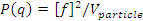 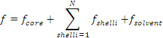where, for a spherically symmetric particle with a particle density ρ(r)
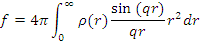so that
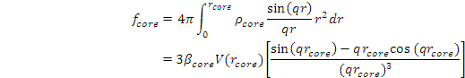 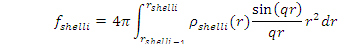 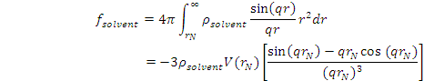Here we assumed that the SLDs of the core and solvent are constant against r.
Now lets consider the SLD of a shell, rshelli, defined by
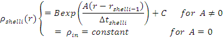An example of a possible SLD profile is shown below where sld_in_shelli (ρin) and thick_shelli (Δt shelli) stand for the SLD of the inner side of the ith shell and the thickness of the ith shell in the equation above, respectively.
For | A | > 0,
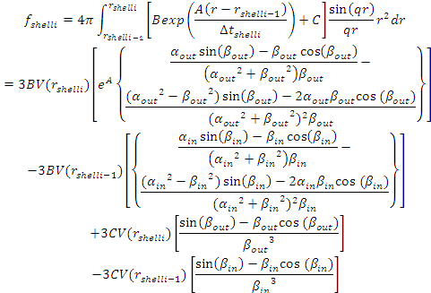For A ~ 0 (eg., A = -0.0001), this function converges to that of the linear SLD profile (ie, ρshelli(r) = A‘ ( r - rshelli - 1) / Δt shelli) + B‘), so this case is equivalent to
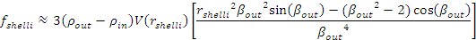 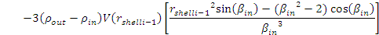 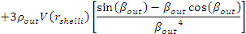 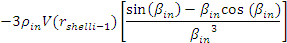For A = 0, the exponential function has no dependence on the radius (so that sld_out_shell (ρout) is ignored this case) and becomes flat. We set the constant to ρin for convenience, and thus the form factor contributed by the shells is
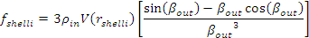 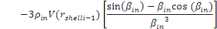In the equation
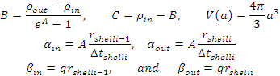Finally, the form factor can be calculated by
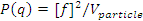where
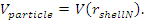and
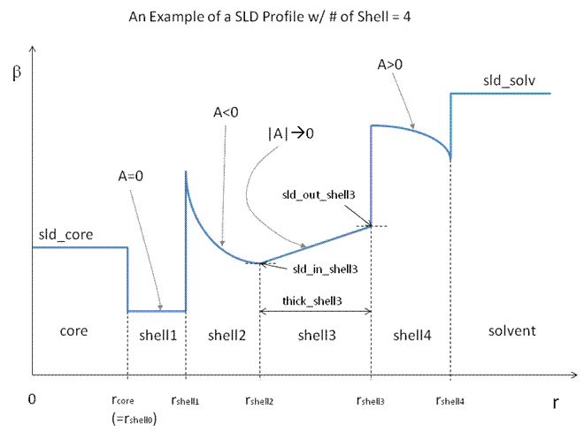The 2D scattering intensity is the same as P(q) above, regardless of the orientation of the q vector which is defined as
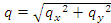NB: The outer most radius is used as the effective radius for S(Q) when P(Q) * S(Q) is applied.
The returned value is scaled to units of cm-1 and the parameters of this model (for only one shell) are the following
| Parameter name | Units | Default value |
|---|---|---|
| A_shell1 | None | 1 |
| scale | None | 1.0 |
| rad_core | Å | 200 |
| thick_shell1 | Å | 50 |
| sld_core | Å-2 | 1.0e-06 |
| sld_in_shell1 | Å-2 | 1.7e-06 |
| sld_out_shell1 | Å-2 | 2.0e-06 |
| sld_solv | Å-2 | 6.4e-06 |
| background | cm-1 | 0.0 |
NB: rad_core represents the core radius (R1) and thick_shell1 (R2 - R1) is the thickness of the shell1, etc.
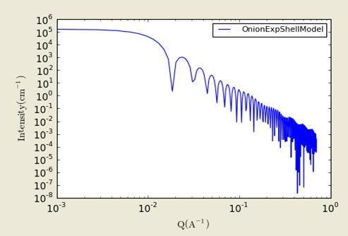Figure. 1D plot using the default values (w/400 point).
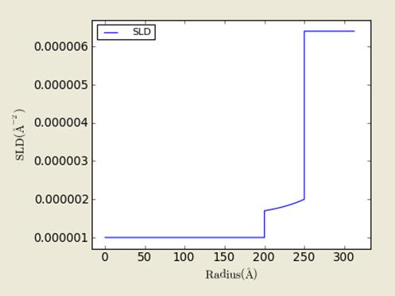Figure. SLD profile from the default values.
REFERENCE
L A Feigin and D I Svergun, Structure Analysis by Small-Angle X-Ray and Neutron Scattering, Plenum Press, New York, (1987).
2.1.10. VesicleModel
This model provides the form factor, P(q), for an unilamellar vesicle. The form factor is normalized by the volume of the shell.
2.1.10.1. Definition
The 1D scattering intensity is calculated in the following way (Guinier, 1955)
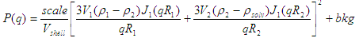where scale is a scale factor, Vshell is the volume of the shell, V1 is the volume of the core, V2 is the total volume, R1 is the radius of the core, R2 is the outer radius of the shell, ρ1 is the scattering length density of the core and the solvent, ρ2 is the scattering length density of the shell, bkg is the background level, and J1 = (sinx- x cosx)/ x 2. The functional form is identical to a “typical” core-shell structure, except that the scattering is normalized by the volume that is contributing to the scattering, namely the volume of the shell alone. Also, the vesicle is best defined in terms of a core radius (= R1) and a shell thickness, t.

The 2D scattering intensity is the same as P(q) above, regardless of the orientation of the q vector which is defined as
NB: The outer most radius (= radius + thickness) is used as the effective radius for S(Q) when P(Q) * S(Q) is applied.
The returned value is scaled to units of cm-1 and the parameters of the VesicleModel are the following
| Parameter name | Units | Default value |
|---|---|---|
| scale | None | 1.0 |
| radius | Å | 100 |
| thickness | Å | 30 |
| core_sld | Å-2 | 6.3e-6 |
| shell_sld | Å-2 | 0 |
| background | cm-1 | 0.0 |
NB: radius represents the core radius (R1) and the thickness (R2 - R1) is the shell thickness.
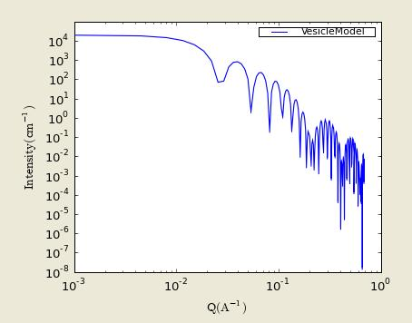Figure. 1D plot using the default values (w/200 data point).
Our model uses the form factor calculations implemented in a c-library provided by the NIST Center for Neutron Research (Kline, 2006).
REFERENCE
A Guinier and G. Fournet, Small-Angle Scattering of X-Rays, John Wiley and Sons, New York, (1955)
2.1.11. SphericalSLDModel
Similarly to the OnionExpShellModel, this model provides the form factor, P(q), for a multi-shell sphere, where the interface between the each neighboring shells can be described by one of a number of functions including error, power-law, and exponential functions. This model is to calculate the scattering intensity by building a continuous custom SLD profile against the radius of the particle. The SLD profile is composed of a flat core, a flat solvent, a number (up to 9 ) flat shells, and the interfacial layers between the adjacent flat shells (or core, and solvent) (see below). Unlike the OnionExpShellModel (using an analytical integration), the interfacial layers here are sub-divided and numerically integrated assuming each of the sub-layers are described by a line function. The number of the sub-layer can be given by users by setting the integer values of npts_inter in the GUI. The form factor is normalized by the total volume of the sphere.
2.1.11.1. Definition
The 1D scattering intensity is calculated in the following way:
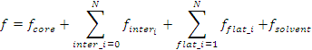where, for a spherically symmetric particle with a particle density ρ(r)
so that
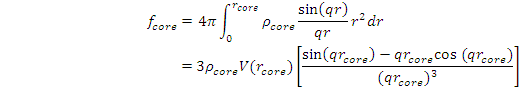 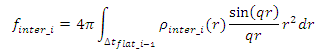 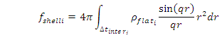 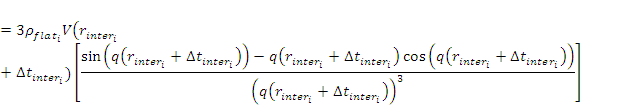 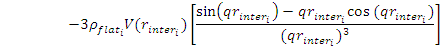Here we assumed that the SLDs of the core and solvent are constant against r. The SLD at the interface between shells, ρinter_i, is calculated with a function chosen by an user, where the functions are
- Exp
- Power-Law
- Erf
The functions are normalized so that they vary between 0 and 1, and they are constrained such that the SLD is continuous at the boundaries of the interface as well as each sub-layers. Thus B and C are determined.
Once ρrinter_i is found at the boundary of the sub-layer of the interface, we can find its contribution to the form factor P(q)
where we assume that ρinter_i(r) can be approximately linear within a sub-layer j.
In the equation
Finally, the form factor can be calculated by
where
and
The 2D scattering intensity is the same as P(q) above, regardless of the orientation of the q vector which is defined as
NB: The outer most radius is used as the effective radius for S(Q) when P(Q) * S(Q) is applied.
The returned value is scaled to units of cm-1 and the parameters of this model (for just one shell) are the following
| Parameter name | Units | Default value |
|---|---|---|
| background | cm-1 | 0.0 |
| npts_inter | None | 35 |
| scale | None | 1 |
| sld_solv | Å-2 | 1e-006 |
| func_inter1 | None | Erf |
| nu_inter | None | 2.5 |
| thick_inter1 | Å | 50 |
| sld_flat1 | Å-2 | 4e-006 |
| thick_flat1 | Å | 100 |
| func_inter0 | None | Erf |
| nu_inter0 | None | 2.5 |
| rad_core0 | Å | 50 |
| sld_core0 | Å-2 | 2.07e-06 |
| thick_core0 | Å | 50 |
NB: rad_core0 represents the core radius (R1).
Figure. 1D plot using the default values (w/400 point).
Figure. SLD profile from the default values.
REFERENCE
L A Feigin and D I Svergun, Structure Analysis by Small-Angle X-Ray and Neutron Scattering, Plenum Press, New York, (1987)
2.1.12. LinearPearlsModel
This model provides the form factor for N spherical pearls of radius R linearly joined by short strings (or segment length or edge separation) l (= A - 2R)). A is the center-to-center pearl separation distance. The thickness of each string is assumed to be negligible.
2.1.12.1. Definition
The output of the scattering intensity function for the LinearPearlsModel is given by (Dobrynin, 1996)
where the mass mp is (SLDpearl - SLDsolvent) * (volume of N pearls). V is the total volume.
The 2D scattering intensity is the same as P(q) above, regardless of the orientation of the q vector.
The returned value is scaled to units of cm-1 and the parameters of the LinearPearlsModel are the following
| Parameter name | Units | Default value |
|---|---|---|
| scale | None | 1.0 |
| radius | Å | 80.0 |
| edge_separation | Å | 350.0 |
| num_pearls | None | 3 |
| sld_pearl | Å-2 | 1e-6 |
| sld_solv | Å-2 | 6.3e-6 |
| background | cm-1 | 0.0 |
NB: num_pearls must be an integer.
REFERENCE
A V Dobrynin, M Rubinstein and S P Obukhov, Macromol., 29 (1996) 2974-2979
2.1.13. PearlNecklaceModel
This model provides the form factor for a pearl necklace composed of two elements: N pearls (homogeneous spheres of radius R) freely jointed by M rods (like strings - with a total mass Mw = M * mr + N * ms, and the string segment length (or edge separation) l (= A - 2R)). A is the center-to-center pearl separation distance.

2.1.13.1. Definition
The output of the scattering intensity function for the PearlNecklaceModel is given by (Schweins, 2004)
where
and
where the mass mi is (SLDi - SLDsolvent) * (volume of the N pearls/rods). V is the total volume of the necklace.
The 2D scattering intensity is the same as P(q) above, regardless of the orientation of the q vector.
The returned value is scaled to units of cm-1 and the parameters of the PearlNecklaceModel are the following
| Parameter name | Units | Default value |
|---|---|---|
| scale | None | 1.0 |
| radius | Å | 80.0 |
| edge_separation | Å | 350.0 |
| num_pearls | None | 3 |
| sld_pearl | Å-2 | 1e-6 |
| sld_solv | Å-2 | 6.3e-6 |
| sld_string | Å-2 | 1e-6 |
| thick_string | ||
| (=rod diameter) | Å | 2.5 |
| background | cm-1 | 0.0 |
NB: num_pearls must be an integer.
REFERENCE
R Schweins and K Huber, Particle Scattering Factor of Pearl Necklace Chains, Macromol. Symp. 211 (2004) 25-42 2004
2.1.14. CylinderModel
This model provides the form factor for a right circular cylinder with uniform scattering length density. The form factor is normalized by the particle volume.
For information about polarised and magnetic scattering, click here.
2.1.14.1. Definition
The output of the 2D scattering intensity function for oriented cylinders is given by (Guinier, 1955)
where
and α is the angle between the axis of the cylinder and the q-vector, V is the volume of the cylinder, L is the length of the cylinder, r is the radius of the cylinder, and Δρ (contrast) is the scattering length density difference between the scatterer and the solvent. J1 is the first order Bessel function.
To provide easy access to the orientation of the cylinder, we define the axis of the cylinder using two angles θ and φ. Those angles are defined in Figure 1.
Figure 1. Definition of the angles for oriented cylinders.

Figure 2. Examples of the angles for oriented pp against the detector plane.
NB: The 2nd virial coefficient of the cylinder is calculated based on the radius and length values, and used as the effective radius for S(Q) when P(Q) * S(Q) is applied.
The returned value is scaled to units of cm-1 and the parameters of the CylinderModel are the following:
| Parameter name | Units | Default value |
|---|---|---|
| scale | None | 1.0 |
| radius | Å | 20.0 |
| length | Å | 400.0 |
| contrast | Å-2 | 3.0e-6 |
| background | cm-1 | 0.0 |
| cyl_theta | degree | 60 |
| cyl_phi | degree | 60 |
The output of the 1D scattering intensity function for randomly oriented cylinders is then given by
The cyl_theta and cyl_phi parameter are not used for the 1D output. Our implementation of the scattering kernel and the 1D scattering intensity use the c-library from NIST.
2.1.14.2. Validation of the CylinderModel
Validation of our code was done by comparing the output of the 1D model to the output of the software provided by the NIST (Kline, 2006). Figure 3 shows a comparison of the 1D output of our model and the output of the NIST software.
Figure 3: Comparison of the SasView scattering intensity for a cylinder with the output of the NIST SANS analysis software. The parameters were set to: Scale = 1.0, Radius = 20 Å, Length = 400 Å, Contrast = 3e-6 Å-2, and Background = 0.01 cm-1.
In general, averaging over a distribution of orientations is done by evaluating the following
where p(θ,φ) is the probability distribution for the orientation and P0(q,α) is the scattering intensity for the fully oriented system. Since we have no other software to compare the implementation of the intensity for fully oriented cylinders, we can compare the result of averaging our 2D output using a uniform distribution p(θ,φ) = 1.0. Figure 4 shows the result of such a cross-check.
Figure 4: Comparison of the intensity for uniformly distributed cylinders calculated from our 2D model and the intensity from the NIST SANS analysis software. The parameters used were: Scale = 1.0, Radius = 20 Å, Length = 400 Å, Contrast = 3e-6 Å-2, and Background = 0.0 cm-1.
2.1.15. HollowCylinderModel
This model provides the form factor, P(q), for a monodisperse hollow right angle circular cylinder (tube) where the form factor is normalized by the volume of the tube
P(q) = scale * <F2> / Vshell + background
where the averaging < > is applied only for the 1D calculation.
The inside and outside of the hollow cylinder are assumed have the same SLD.
2.1.15.1 Definition
The 1D scattering intensity is calculated in the following way (Guinier, 1955)
where scale is a scale factor, J1 is the 1st order Bessel function, J1(x) = (sin x - x cos x)/ x2.
To provide easy access to the orientation of the core-shell cylinder, we define the axis of the cylinder using two angles θ and φ. As for the case of the cylinder, those angles are defined in Figure 2 of the CylinderModel.
NB: The 2nd virial coefficient of the cylinder is calculated based on the radius and 2 length values, and used as the effective radius for S(Q) when P(Q) * S(Q) is applied.
In the parameters, the contrast represents SLD shell - SLD solvent and the radius = Rshell while core_radius = Rcore.
| Parameter name | Units | Default value |
|---|---|---|
| scale | None | 1.0 |
| radius | Å | 30 |
| length | Å | 400 |
| core_radius | Å | 20 |
| sldCyl | Å-2 | 6.3e-6 |
| sldSolv | Å-2 | 5e-06 |
| background | cm-1 | 0.01 |
Figure. 1D plot using the default values (w/1000 data point).
Our model uses the form factor calculations implemented in a c-library provided by the NIST Center for Neutron Research (Kline, 2006).
Figure. Definition of the angles for the oriented HollowCylinderModel.
Figure. Examples of the angles for oriented pp against the detector plane.
REFERENCE
L A Feigin and D I Svergun, Structure Analysis by Small-Angle X-Ray and Neutron Scattering, Plenum Press, New York, (1987)
2.1.16 CappedCylinderModel
Calculates the scattering from a cylinder with spherical section end-caps. This model simply becomes the ConvexLensModel when the length of the cylinder L = 0, that is, a sphereocylinder with end caps that have a radius larger than that of the cylinder and the center of the end cap radius lies within the cylinder. See the diagram for the details of the geometry and restrictions on parameter values.
2.1.16.1. Definition
The returned value is scaled to units of cm-1sr-1, absolute scale.
The Capped Cylinder geometry is defined as

where r is the radius of the cylinder. All other parameters are as defined in the diagram. Since the end cap radius R >= r and by definition for this geometry h < 0, h is then defined by r and R as
h = -1 * sqrt(R2 - r2)
The scattered intensity I(q) is calculated as
where the amplitude A(q) is given as
The < > brackets denote an average of the structure over all orientations. <A2(q)> is then the form factor, P(q). The scale factor is equivalent to the volume fraction of cylinders, each of volume, V. Contrast is the difference of scattering length densities of the cylinder and the surrounding solvent.
The volume of the Capped Cylinder is (with h as a positive value here)
and its radius-of-gyration
The requirement that R >= r is not enforced in the model! It is up to you to restrict this during analysis.
This following example dataset is produced by running the MacroCappedCylinder(), using 200 data points, qmin = 0.001 Å-1, qmax = 0.7 Å-1 and the default values
| Parameter name | Units | Default value |
|---|---|---|
| scale | None | 1.0 |
| len_cyl | Å | 400.0 |
| rad_cap | Å | 40.0 |
| rad_cyl | Å | 20.0 |
| sld_capcyl | Å-2 | 1.0e-006 |
| sld_solv | Å-2 | 6.3e-006 |
| background | cm-1 | 0 |
Figure. 1D plot using the default values (w/256 data point).
For 2D data: The 2D scattering intensity is calculated similar to the 2D cylinder model. For example, for θ = 45 deg and φ =0 deg with default values for other parameters
Figure. 2D plot (w/(256X265) data points).
Figure. Definition of the angles for oriented 2D cylinders.
Figure. Examples of the angles for oriented pp against the detector plane.
REFERENCE
H Kaya, J. Appl. Cryst., 37 (2004) 223-230
H Kaya and N-R deSouza, J. Appl. Cryst., 37 (2004) 508-509 (addenda and errata)
2.1.17. CoreShellCylinderModel
This model provides the form factor for a circular cylinder with a core-shell scattering length density profile. The form factor is normalized by the particle volume.
2.1.17.1. Definition
The output of the 2D scattering intensity function for oriented core-shell cylinders is given by (Kline, 2006)
where
and α is the angle between the axis of the cylinder and the q-vector, Vs is the volume of the outer shell (i.e. the total volume, including the shell), Vc is the volume of the core, L is the length of the core, r is the radius of the core, t is the thickness of the shell, ρc is the scattering length density of the core, ρs is the scattering length density of the shell, ρsolv is the scattering length density of the solvent, and bkg is the background level. The outer radius of the shell is given by r+t and the total length of the outer shell is given by L+2t. J1 is the first order Bessel function.

To provide easy access to the orientation of the core-shell cylinder, we define the axis of the cylinder using two angles θ and φ. As for the case of the cylinder, those angles are defined in Figure 2 of the CylinderModel.
NB: The 2nd virial coefficient of the cylinder is calculated based on the radius and 2 length values, and used as the effective radius for S(Q) when P(Q) * S(Q) is applied.
The returned value is scaled to units of cm-1 and the parameters of the core-shell cylinder model are the following
| Parameter name | Units | Default value |
|---|---|---|
| scale | None | 1.0 |
| radius | Å | 20.0 |
| thickness | Å | 10.0 |
| length | Å | 400.0 |
| core_sld | Å-2 | 1e-6 |
| shell_sld | Å-2 | 4e-6 |
| solvent_sld | Å-2 | 1e-6 |
| background | cm-1 | 0.0 |
| axis_theta | degree | 90 |
| axis_phi | degree | 0.0 |
The output of the 1D scattering intensity function for randomly oriented cylinders is then given by the equation above.
The axis_theta and axis_phi parameters are not used for the 1D output. Our implementation of the scattering kernel and the 1D scattering intensity use the c-library from NIST.
2.1.17.2. Validation of the CoreShellCylinderModel
Validation of our code was done by comparing the output of the 1D model to the output of the software provided by the NIST (Kline, 2006). Figure 1 shows a comparison of the 1D output of our model and the output of the NIST software.
Figure 1: Comparison of the SasView scattering intensity for a core-shell cylinder with the output of the NIST SANS analysis software. The parameters were set to: Scale = 1.0, Radius = 20 Å, Thickness = 10 Å, Length = 400 Å, Core_sld = 1e-6 Å-2, Shell_sld = 4e-6 Å-2, Solvent_sld = 1e-6 Å-2, and Background = 0.01 cm-1.
Averaging over a distribution of orientation is done by evaluating the equation above. Since we have no other software to compare the implementation of the intensity for fully oriented cylinders, we can compare the result of averaging our 2D output using a uniform distribution p(θ,φ) = 1.0. Figure 2 shows the result of such a cross-check.
Figure 2: Comparison of the intensity for uniformly distributed core-shell cylinders calculated from our 2D model and the intensity from the NIST SANS analysis software. The parameters used were: Scale = 1.0, Radius = 20 Å, Thickness = 10 Å, Length =400 Å, Core_sld = 1e-6 Å-2, Shell_sld = 4e-6 Å-2, Solvent_sld = 1e-6 Å-2, and Background = 0.0 cm-1.
Figure. Definition of the angles for oriented core-shell cylinders.
Figure. Examples of the angles for oriented pp against the detector plane.
2013/11/26 - Description reviewed by Heenan, R.
2.1.18 EllipticalCylinderModel
This function calculates the scattering from an elliptical cylinder.
2.1.18.1 Definition for 2D (orientated system)
The angles θ and φ define the orientation of the axis of the cylinder. The angle Ψ is defined as the orientation of the major axis of the ellipse with respect to the vector Q. A gaussian polydispersity can be added to any of the orientation angles, and also for the minor radius and the ratio of the ellipse radii.
Figure. a = r_minor and νn = r_ratio (i.e., r_major / r_minor).
The function calculated is
with the functions
and the angle Ψ is defined as the orientation of the major axis of the ellipse with respect to the vector q.
2.1.18.2 Definition for 1D (no preferred orientation)
The form factor is averaged over all possible orientation before normalized by the particle volume
P(q) = scale * <F2> / V
The returned value is scaled to units of cm-1.
To provide easy access to the orientation of the elliptical cylinder, we define the axis of the cylinder using two angles θ, φ and Ψ. As for the case of the cylinder, the angles θ and φ are defined on Figure 2 of CylinderModel. The angle Ψ is the rotational angle around its own long_c axis against the q plane. For example, Ψ = 0 when the r_minor axis is parallel to the x-axis of the detector.
All angle parameters are valid and given only for 2D calculation; ie, an oriented system.
Figure. Definition of angles for 2D
Figure. Examples of the angles for oriented elliptical cylinders against the detector plane.
NB: The 2nd virial coefficient of the cylinder is calculated based on the averaged radius (= sqrt(r_minor2 * r_ratio)) and length values, and used as the effective radius for S(Q) when P(Q) * S(Q) is applied.
| Parameter name | Units | Default value |
|---|---|---|
| scale | None | 1.0 |
| r_minor | Å | 20.0 |
| r_ratio | Å | 1.5 |
| length | Å | 400.0 |
| sldCyl | Å-2 | 4e-06 |
| sldSolv | Å-2 | 1e-06 |
| background | cm-1 | 0 |
Figure. 1D plot using the default values (w/1000 data point).
2.1.18.3 Validation of the EllipticalCylinderModel
Validation of our code was done by comparing the output of the 1D calculation to the angular average of the output of the 2D calculation over all possible angles. The figure below shows the comparison where the solid dot refers to averaged 2D values while the line represents the result of the 1D calculation (for the 2D averaging, values of 76, 180, and 76 degrees are taken for the angles of θ, φ, and Ψ respectively).
Figure. Comparison between 1D and averaged 2D.
In the 2D average, more binning in the angle φ is necessary to get the proper result. The following figure shows the results of the averaging by varying the number of angular bins.
Figure. The intensities averaged from 2D over different numbers of bins and angles.
REFERENCE
L A Feigin and D I Svergun, Structure Analysis by Small-Angle X-Ray and Neutron Scattering, Plenum, New York, (1987)
2.1.19. FlexibleCylinderModel
This model provides the form factor, P(q), for a flexible cylinder where the form factor is normalized by the volume of the cylinder. Inter-cylinder interactions are NOT provided for.
P(q) = scale * <F2> / V + background
where the averaging < > is applied over all orientations for 1D.
The 2D scattering intensity is the same as 1D, regardless of the orientation of the q vector which is defined as
2.1.19.1. Definition
The chain of contour length, L, (the total length) can be described as a chain of some number of locally stiff segments of length lp, the persistence length (the length along the cylinder over which the flexible cylinder can be considered a rigid rod). The Kuhn length (b = 2 * l p) is also used to describe the stiffness of a chain.
The returned value is in units of cm-1, on absolute scale.
In the parameters, the sldCyl and sldSolv represent the SLD of the chain/cylinder and solvent respectively.
| Parameter name | Units | Default value |
|---|---|---|
| scale | None | 1.0 |
| radius | Å | 20 |
| length | Å | 1000 |
| sldCyl | Å-2 | 1e-06 |
| sldSolv | Å-2 | 6.3e-06 |
| background | cm-1 | 0.01 |
| kuhn_length | Å | 100 |
Figure. 1D plot using the default values (w/1000 data point).
Our model uses the form factor calculations implemented in a c-library provided by the NIST Center for Neutron Research (Kline, 2006).
From the reference
“Method 3 With Excluded Volume” is used. The model is a parametrization of simulations of a discrete representation of the worm-like chain model of Kratky and Porod applied in the pseudocontinuous limit. See equations (13,26-27) in the original reference for the details.
REFERENCE
J S Pedersen and P Schurtenberger. Scattering functions of semiflexible polymers with and without excluded volume effects. Macromolecules, 29 (1996) 7602-7612
Correction of the formula can be found in
W R Chen, P D Butler and L J Magid, Incorporating Intermicellar Interactions in the Fitting of SANS Data from Cationic Wormlike Micelles. Langmuir, 22(15) 2006 6539–6548
2.1.20 FlexCylEllipXModel
This model calculates the form factor for a flexible cylinder with an elliptical cross section and a uniform scattering length density. The non-negligible diameter of the cylinder is included by accounting for excluded volume interactions within the walk of a single cylinder. The form factor is normalized by the particle volume such that
P(q) = scale * <F2> / V + background
where < > is an average over all possible orientations of the flexible cylinder.
2.1.20.1. Definition
The function calculated is from the reference given below. From that paper, “Method 3 With Excluded Volume” is used. The model is a parameterization of simulations of a discrete representation of the worm-like chain model of Kratky and Porod applied in the pseudo-continuous limit. See equations (13, 26-27) in the original reference for the details.
NB: there are several typos in the original reference that have been corrected by WRC. Details of the corrections are in the reference below. Most notably
- Equation (13): the term (1 - w(QR)) should swap position with w(QR)
- Equations (23) and (24) are incorrect; WRC has entered these into Mathematica and solved analytically. The results were then converted to code.
- Equation (27) should be q0 = max(a3/sqrt(RgSquare),3) instead of max(a3*b/sqrt(RgSquare),3)
- The scattering function is negative for a range of parameter values and q-values that are experimentally accessible. A correction function has been added to give the proper behavior.
The chain of contour length, L, (the total length) can be described as a chain of some number of locally stiff segments of length lp, the persistence length (the length along the cylinder over which the flexible cylinder can be considered a rigid rod). The Kuhn length (b = 2 * l p) is also used to describe the stiffness of a chain.
The cross section of the cylinder is elliptical, with minor radius a. The major radius is larger, so of course, the axis ratio (parameter 4) must be greater than one. Simple constraints should be applied during curve fitting to maintain this inequality.
The returned value is in units of cm-1, on absolute scale.
In the parameters, sldCyl and sldSolv represent the SLD of the chain/cylinder and solvent respectively. The scale, and the contrast are both multiplicative factors in the model and are perfectly correlated. One or both of these parameters must be held fixed during model fitting.
If the scale is set equal to the particle volume fraction, φ, the returned value is the scattered intensity per unit volume, I(q) = φ * P(q).
No inter-cylinder interference effects are included in this calculation.
For 2D data: The 2D scattering intensity is calculated in the same way as 1D, where the q vector is defined as
This example dataset is produced by running the Macro FlexCylEllipXModel, using 200 data points, qmin = 0.001 Å-1, qmax = 0.7 Å-1 and the default values below
| Parameter name | Units | Default value |
|---|---|---|
| axis_ratio | None | 1.5 |
| background | cm-1 | 0.0001 |
| Kuhn_length | Å | 100 |
| Contour length | Å | 1e+3 |
| radius | Å | 20.0 |
| scale | None | 1.0 |
| sldCyl | Å-2 | 1e-6 |
| sldSolv | Å-2 | 6.3e-6 |
Figure. 1D plot using the default values (w/200 data points).
REFERENCE
J S Pedersen and P Schurtenberger. Scattering functions of semiflexible polymers with and without excluded volume effects. Macromolecules, 29 (1996) 7602-7612
Correction of the formula can be found in
W R Chen, P D Butler and L J Magid, Incorporating Intermicellar Interactions in the Fitting of SANS Data from Cationic Wormlike Micelles. Langmuir, 22(15) 2006 6539–6548
2.1.21 CoreShellBicelleModel
This model provides the form factor for a circular cylinder with a core-shell scattering length density profile. The form factor is normalized by the particle volume.
This model is a more general case of core-shell cylinder model (see above and reference below) in that the parameters of the shell are separated into a face-shell and a rim-shell so that users can set different values of the thicknesses and SLDs.
(Graphic from DOI: 10.1039/C0NP00002G)
The returned value is scaled to units of cm-1 and the parameters of the CoreShellBicelleModel are the following
| Parameter name | Units | Default value |
|---|---|---|
| scale | None | 1.0 |
| radius | Å | 20.0 |
| rim_thick | Å | 10.0 |
| face_thick | Å | 10.0 |
| length | Å | 400.0 |
| core_sld | Å-2 | 1e-6 |
| rim_sld | Å-2 | 4e-6 |
| face_sld | Å-2 | 4e-6 |
| solvent_sld | Å-2 | 1e-6 |
| background | cm-1 | 0.0 |
| axis_theta | degree | 90 |
| axis_phi | degree | 0.0 |
The output of the 1D scattering intensity function for randomly oriented cylinders is then given by the equation above.
The axis_theta and axis_phi parameters are not used for the 1D output. Our implementation of the scattering kernel and the 1D scattering intensity use the c-library from NIST.
Figure. 1D plot using the default values (w/200 data point).
Figure. Definition of the angles for the oriented CoreShellBicelleModel.
Figure. Examples of the angles for oriented pp against the detector plane.
REFERENCE
L A Feigin and D I Svergun, Structure Analysis by Small-Angle X-Ray and Neutron Scattering, Plenum Press, New York, (1987)
2.1.22. BarBellModel
Calculates the scattering from a barbell-shaped cylinder (This model simply becomes the DumBellModel when the length of the cylinder, L, is set to zero). That is, a sphereocylinder with spherical end caps that have a radius larger than that of the cylinder and the center of the end cap radius lies outside of the cylinder. All dimensions of the BarBell are considered to be monodisperse. See the diagram for the details of the geometry and restrictions on parameter values.
2.1.22.1. Definition
The returned value is scaled to units of cm-1sr-1, absolute scale.
The barbell geometry is defined as

where r is the radius of the cylinder. All other parameters are as defined in the diagram.
Since the end cap radius R >= r and by definition for this geometry h < 0, h is then defined by r and R as
h = -1 * sqrt(R2 - r2)
The scattered intensity I(q) is calculated as
where the amplitude A(q) is given as
The < > brackets denote an average of the structure over all orientations. <A 2(q)> is then the form factor, P(q). The scale factor is equivalent to the volume fraction of cylinders, each of volume, V. Contrast is the difference of scattering length densities of the cylinder and the surrounding solvent.
The volume of the barbell is
and its radius-of-gyration is
The requirement that R >= r is not enforced in the model! It is up to you to restrict this during analysis.
This example dataset is produced by running the Macro PlotBarbell(), using 200 data points, qmin = 0.001 Å-1, qmax = 0.7 Å-1 and the following default values
| Parameter name | Units | Default value |
|---|---|---|
| scale | None | 1.0 |
| len_bar | Å | 400.0 |
| rad_bar | Å | 20.0 |
| rad_bell | Å | 40.0 |
| sld_barbell | Å-2 | 1.0e-006 |
| sld_solv | Å-2 | 6.3e-006 |
| background | cm-1 | 0 |
Figure. 1D plot using the default values (w/256 data point).
For 2D data: The 2D scattering intensity is calculated similar to the 2D cylinder model. For example, for θ = 45 deg and φ = 0 deg with default values for other parameters
Figure. 2D plot (w/(256X265) data points).
Figure. Examples of the angles for oriented pp against the detector plane.
Figure. Definition of the angles for oriented 2D barbells.
REFERENCE
H Kaya, J. Appl. Cryst., 37 (2004) 37 223-230
H Kaya and N R deSouza, J. Appl. Cryst., 37 (2004) 508-509 (addenda and errata)
2.1.23. StackedDisksModel
This model provides the form factor, P(q), for stacked discs (tactoids) with a core/layer structure where the form factor is normalized by the volume of the cylinder. Assuming the next neighbor distance (d-spacing) in a stack of parallel discs obeys a Gaussian distribution, a structure factor S(q) proposed by Kratky and Porod in 1949 is used in this function.
Note that the resolution smearing calculation uses 76 Gauss quadrature points to properly smear the model since the function is HIGHLY oscillatory, especially around the q-values that correspond to the repeat distance of the layers.
The 2D scattering intensity is the same as 1D, regardless of the orientation of the q vector which is defined as
The returned value is in units of cm-1 sr-1, on absolute scale.
2.1.23.1 Definition
The scattering intensity I(q) is
where the contrast
and N is the number of discs per unit volume, α is the angle between the axis of the disc and q, and Vt and Vc are the total volume and the core volume of a single disc, respectively.
where d = thickness of the layer (layer_thick), 2h = core thickness (core_thick), and R = radius of the disc (radius).
where n = the total number of the disc stacked (n_stacking), D = the next neighbor center-to-center distance (d-spacing), and σD= the Gaussian standard deviation of the d-spacing (sigma_d).
To provide easy access to the orientation of the stacked disks, we define the axis of the cylinder using two angles θ and φ. These angles are defined on Figure 2 of CylinderModel.
NB: The 2nd virial coefficient of the cylinder is calculated based on the radius and length = n_stacking * (core_thick + 2 * layer_thick) values, and used as the effective radius for S(Q) when P(Q) * S(Q) is applied.
| Parameter name | Units | Default value |
|---|---|---|
| background | cm-1 | 0.001 |
| core_sld | Å-2 | 4e-006 |
| core_thick | Å | 10 |
| layer_sld | Å-2 | 0 |
| layer_thick | Å | 15 |
| n_stacking | None | 1 |
| radius | Å | 3e+03 |
| scale | None | 0.01 |
| sigma_d | Å | 0 |
| solvent_sld | Å-2 | 5e-06 |
Figure. 1D plot using the default values (w/1000 data point).
Figure. Examples of the angles for oriented stackeddisks against the detector plane.
Figure. Examples of the angles for oriented pp against the detector plane.
Our model uses the form factor calculations implemented in a c-library provided by the NIST Center for Neutron Research (Kline, 2006)
REFERENCE
A Guinier and G Fournet, Small-Angle Scattering of X-Rays, John Wiley and Sons, New York, 1955
O Kratky and G Porod, J. Colloid Science, 4, (1949) 35
J S Higgins and H C Benoit, Polymers and Neutron Scattering, Clarendon, Oxford, 1994
2.1.24. PringleModel
This model provides the form factor, P(q), for a ‘pringle’ or ‘saddle-shaped’ object (a hyperbolic paraboloid).

(Graphic from Matt Henderson, matt@matthen.com)
The returned value is in units of cm-1, on absolute scale.
The form factor calculated is
where
The parameters of the model and a plot comparing the pringle model with the equivalent cylinder are shown below.
| Parameter name | Units | Default value |
|---|---|---|
| background | cm-1 | 0.0 |
| alpha | None | 0.001 |
| beta | None | 0.02 |
| radius | Å | 60 |
| scale | None | 1 |
| sld_pringle | Å-2 | 1e-06 |
| sld_solvent | Å-2 | 6.3e-06 |
| thickness | Å | 10 |
Figure. 1D plot using the default values (w/150 data point).
REFERENCE
S Alexandru Rautu, Private Communication.
2.1.25. EllipsoidModel
This model provides the form factor for an ellipsoid (ellipsoid of revolution) with uniform scattering length density. The form factor is normalized by the particle volume.
2.1.25.1. Definition
The output of the 2D scattering intensity function for oriented ellipsoids is given by (Feigin, 1987)
where
and
α is the angle between the axis of the ellipsoid and the q-vector, V is the volume of the ellipsoid, Ra is the radius along the rotational axis of the ellipsoid, Rb is the radius perpendicular to the rotational axis of the ellipsoid and Δρ (contrast) is the scattering length density difference between the scatterer and the solvent.
To provide easy access to the orientation of the ellipsoid, we define the rotation axis of the ellipsoid using two angles θ and φ. These angles are defined on Figure 2 of the CylinderModel. For the ellipsoid, θ is the angle between the rotational axis and the z-axis.
NB: The 2nd virial coefficient of the solid ellipsoid is calculated based on the radius_a and radius_b values, and used as the effective radius for S(Q) when P(Q) * S(Q) is applied.
The returned value is scaled to units of cm-1 and the parameters of the EllipsoidModel are the following
| Parameter name | Units | Default value |
|---|---|---|
| scale | None | 1.0 |
| radius_a (polar) | Å | 20.0 |
| radius_b (equat) | Å | 400.0 |
| sldEll | Å-2 | 4.0e-6 |
| sldSolv | Å-2 | 1.0e-6 |
| background | cm-1 | 0.0 |
| axis_theta | degree | 90 |
| axis_phi | degree | 0.0 |
The output of the 1D scattering intensity function for randomly oriented ellipsoids is then given by the equation above.
The axis_theta and axis_phi parameters are not used for the 1D output. Our implementation of the scattering kernel and the 1D scattering intensity use the c-library from NIST.

Figure. The angles for oriented ellipsoid.
2.1.25.1. Validation of the EllipsoidModel
Validation of our code was done by comparing the output of the 1D model to the output of the software provided by the NIST (Kline, 2006). Figure 1 below shows a comparison of the 1D output of our model and the output of the NIST software.
Figure 1: Comparison of the SasView scattering intensity for an ellipsoid with the output of the NIST SANS analysis software. The parameters were set to: Scale = 1.0, Radius_a = 20, Radius_b = 400, Contrast = 3e-6 Å-2, and Background = 0.01 cm-1.
Averaging over a distribution of orientation is done by evaluating the equation above. Since we have no other software to compare the implementation of the intensity for fully oriented ellipsoids, we can compare the result of averaging our 2D output using a uniform distribution p(θ,φ) = 1.0. Figure 2 shows the result of such a cross-check.

Figure 2: Comparison of the intensity for uniformly distributed ellipsoids calculated from our 2D model and the intensity from the NIST SANS analysis software. The parameters used were: Scale = 1.0, Radius_a = 20, Radius_b = 400, Contrast = 3e-6 Å-2, and Background = 0.0 cm-1.
The discrepancy above q = 0.3 cm-1 is due to the way the form factors are calculated in the c-library provided by NIST. A numerical integration has to be performed to obtain P(q) for randomly oriented particles. The NIST software performs that integration with a 76-point Gaussian quadrature rule, which will become imprecise at high q where the amplitude varies quickly as a function of q. The SasView result shown has been obtained by summing over 501 equidistant points in . Our result was found to be stable over the range of q shown for a number of points higher than 500.
REFERENCE
L A Feigin and D I Svergun. Structure Analysis by Small-Angle X-Ray and Neutron Scattering, Plenum, New York, 1987.
2.1.26. CoreShellEllipsoidModel
This model provides the form factor, P(q), for a core shell ellipsoid (below) where the form factor is normalized by the volume of the cylinder.
P(q) = scale * <f2> / V + background
where the volume V = (4/3)π (rmaj rmin2) and the averaging < > is applied over all orientations for 1D.
The returned value is in units of cm-1, on absolute scale.
2.1.26.1. Definition
The form factor calculated is
To provide easy access to the orientation of the core-shell ellipsoid, we define the axis of the solid ellipsoid using two angles θ and φ. These angles are defined on Figure 2 of the CylinderModel. The contrast is defined as SLD(core) - SLD(shell) and SLD(shell) - SLD(solvent).
In the parameters, equat_core = equatorial core radius, polar_core = polar core radius, equat_shell = rmin (or equatorial outer radius), and polar_shell = = rmaj (or polar outer radius).
NB: The 2nd virial coefficient of the solid ellipsoid is calculated based on the radius_a (= polar_shell) and radius_b (= equat_shell) values, and used as the effective radius for S(Q) when P(Q) * S(Q) is applied.
| Parameter name | Units | Default value |
|---|---|---|
| background | cm-1 | 0.001 |
| equat_core | Å | 200 |
| equat_shell | Å | 250 |
| sld_solvent | Å-2 | 6e-06 |
| ploar_shell | Å | 30 |
| ploar_core | Å | 20 |
| scale | None | 1 |
| sld_core | Å-2 | 2e-06 |
| sld_shell | Å-2 | 1e-06 |
Figure. 1D plot using the default values (w/1000 data point).
Figure. The angles for oriented CoreShellEllipsoid.
Our model uses the form factor calculations implemented in a c-library provided by the NIST Center for Neutron Research (Kline, 2006).
REFERENCE
M Kotlarchyk, S H Chen, J. Chem. Phys., 79 (1983) 2461
S J Berr, Phys. Chem., 91 (1987) 4760
2.1.27. CoreShellEllipsoidXTModel
An alternative version of P(q) for the core-shell ellipsoid (see CoreShellEllipsoidModel), having as parameters the core axial ratio X and a shell thickness, which are more often what we would like to determine.
This model is also better behaved when polydispersity is applied than the four independent radii in CoreShellEllipsoidModel.
2.1.27.1. Definition
The geometric parameters of this model are
equat_core = equatorial core radius = Rminor_core X_core = polar_core / equat_core = Rmajor_core / Rminor_core T_shell = equat_outer - equat_core = Rminor_outer - Rminor_core XpolarShell = Tpolar_shell / T_shell = (Rmajor_outer - Rmajor_core)/(Rminor_outer - Rminor_core)
In terms of the original radii
polar_core = equat_core * X_core equat_shell = equat_core + T_shell polar_shell = equat_core * X_core + T_shell * XpolarShell
(where we note that “shell” perhaps confusingly, relates to the outer radius)
When X_core < 1 the core is oblate; when X_core > 1 it is prolate. X_core = 1 is a spherical core.
For a fixed shell thickness XpolarShell = 1, to scale the shell thickness pro-rata with the radius XpolarShell = X_core.
When including an S(q), the radius in S(q) is calculated to be that of a sphere with the same 2nd virial coefficient of the outer surface of the ellipsoid. This may have some undesirable effects if the aspect ratio of the ellipsoid is large (ie, if X << 1 or X >> 1), when the S(q) - which assumes spheres - will not in any case be valid.
If SAS data are in absolute units, and the SLDs are correct, then scale should be the total volume fraction of the “outer particle”. When S(q) is introduced this moves to the S(q) volume fraction, and scale should then be 1.0, or contain some other units conversion factor (for example, if you have SAXS data).
| Parameter name | Units | Default value |
|---|---|---|
| background | cm-1 | 0.001 |
| equat_core | Å | 20 |
| scale | None | 0.05 |
| sld_core | Å-2 | 2.0e-6 |
| sld_shell | Å-2 | 1.0e-6 |
| sld_solv | Å-2 | 6.3e-6 |
| T_shell | Å | 30 |
| X_core | None | 3.0 |
| XpolarShell | None | 1.0 |
REFERENCE
R K Heenan, Private communication
2.1.28. TriaxialEllipsoidModel
This model provides the form factor, P(q), for an ellipsoid (below) where all three axes are of different lengths, i.e., Ra =< Rb =< Rc. Users should maintain this inequality for all calculations.
P(q) = scale * <f2> / V + background
where the volume V = (4/3)π (Ra Rb Rc), and the averaging < > is applied over all orientations for 1D.
The returned value is in units of cm-1, on absolute scale.
2.1.28.1. Definition
The form factor calculated is
To provide easy access to the orientation of the triaxial ellipsoid, we define the axis of the cylinder using the angles θ, φ and Ψ. These angles are defined on Figure 2 of the CylinderModel. The angle Ψ is the rotational angle around its own semi_axisC axis against the q plane. For example, Ψ = 0 when the semi_axisA axis is parallel to the x-axis of the detector.
The radius-of-gyration for this system is Rg2 = (Ra2 Rb2 Rc2)/5.
The contrast is defined as SLD(ellipsoid) - SLD(solvent). In the parameters, semi_axisA = Ra (or minor equatorial radius), semi_axisB = Rb (or major equatorial radius), and semi_axisC = Rc (or polar radius of the ellipsoid).
NB: The 2nd virial coefficient of the triaxial solid ellipsoid is calculated based on the radius_a (= semi_axisC) and radius_b (= sqrt(semi_axisA * semi_axisB)) values, and used as the effective radius for S(Q) when P(Q) * S(Q) is applied.
| Parameter name | Units | Default value |
|---|---|---|
| background | cm-1 | 0.0 |
| semi_axisA | Å | 35 |
| semi_axisB | Å | 100 |
| semi_axisC | Å | 400 |
| scale | None | 1 |
| sldEll | Å-2 | 1.0e-06 |
| sldSolv | Å-2 | 6.3e-06 |
Figure. 1D plot using the default values (w/1000 data point).
2.1.28.2.Validation of the TriaxialEllipsoidModel
Validation of our code was done by comparing the output of the 1D calculation to the angular average of the output of 2D calculation over all possible angles. The Figure below shows the comparison where the solid dot refers to averaged 2D while the line represents the result of 1D calculation (for 2D averaging, 76, 180, and 76 points are taken for the angles of θ, φ, and ψ respectively).
Figure. Comparison between 1D and averaged 2D.

Figure. The angles for oriented ellipsoid.
Our model uses the form factor calculations implemented in a c-library provided by the NIST Center for Neutron Research (Kline, 2006)
REFERENCE
L A Feigin and D I Svergun, Structure Analysis by Small-Angle X-Ray and Neutron Scattering, Plenum, New York, 1987.
2.1.29. LamellarModel
This model provides the scattering intensity, I(q), for a lyotropic lamellar phase where a uniform SLD and random distribution in solution are assumed. Polydispersity in the bilayer thickness can be applied from the GUI.
2.1.29.1. Definition
The scattering intensity I(q) is
The form factor is
where δ = bilayer thickness.
The 2D scattering intensity is calculated in the same way as 1D, where the q vector is defined as
The returned value is in units of cm-1, on absolute scale. In the parameters, sld_bi = SLD of the bilayer, sld_sol = SLD of the solvent, and bi_thick = thickness of the bilayer.
| Parameter name | Units | Default value |
|---|---|---|
| background | cm-1 | 0.0 |
| sld_bi | Å-2 | 1e-06 |
| bi_thick | Å | 50 |
| sld_sol | Å-2 | 6e-06 |
| scale | None | 1 |
Figure. 1D plot using the default values (w/1000 data point).
Our model uses the form factor calculations implemented in a c-library provided by the NIST Center for Neutron Research (Kline, 2006).
REFERENCE
F Nallet, R Laversanne, and D Roux, J. Phys. II France, 3, (1993) 487-502
also in J. Phys. Chem. B, 105, (2001) 11081-11088
2.1.30. LamellarFFHGModel
This model provides the scattering intensity, I(q), for a lyotropic lamellar phase where a random distribution in solution are assumed. The SLD of the head region is taken to be different from the SLD of the tail region.
2.1.31.1. Definition
The scattering intensity I(q) is
The form factor is
where δT = tail length (or t_length), δH = head thickness (or h_thickness), ΔρH = SLD(headgroup) - SLD(solvent), and ΔρT = SLD(tail) - SLD(solvent). The total thickness is 2(H+T).
The 2D scattering intensity is calculated in the same way as 1D, where the q vector is defined as
The returned value is in units of cm-1, on absolute scale. In the parameters, sld_tail = SLD of the tail group, and sld_head = SLD of the head group.
| Parameter name | Units | Default value |
|---|---|---|
| background | cm-1 | 0.0 |
| sld_head | Å-2 | 3e-06 |
| scale | None | 1 |
| sld_solvent | Å-2 | 6e-06 |
| h_thickness | Å | 10 |
| t_length | Å | 15 |
| sld_tail | Å-2 | 0 |
Figure. 1D plot using the default values (w/1000 data point).
Our model uses the form factor calculations implemented in a c-library provided by the NIST Center for Neutron Research (Kline, 2006).
REFERENCE
F Nallet, R Laversanne, and D Roux, J. Phys. II France, 3, (1993) 487-502
also in J. Phys. Chem. B, 105, (2001) 11081-11088
2014/04/17 - Description reviewed by S King and P Butler.
2.1.31. LamellarPSModel
This model provides the scattering intensity, I(q) = P(q) * S(q), for a lyotropic lamellar phase where a random distribution in solution are assumed.
2.1.31.1. Definition
The scattering intensity I(q) is
The form factor is
and the structure factor is
where
Here d = (repeat) spacing, δ = bilayer thickness, the contrast Δρ = SLD(headgroup) - SLD(solvent), K = smectic bending elasticity, B = compression modulus, and N = number of lamellar plates (n_plates).
NB: When the Caille parameter is greater than approximately 0.8 to 1.0, the assumptions of the model are incorrect. And due to a complication of the model function, users are responsible for making sure that all the assumptions are handled accurately (see the original reference below for more details).
The 2D scattering intensity is calculated in the same way as 1D, where the q vector is defined as
The returned value is in units of cm-1, on absolute scale.
| Parameter name | Units | Default value |
|---|---|---|
| background | cm-1 | 0.0 |
| contrast | Å-2 | 5e-06 |
| scale | None | 1 |
| delta | Å | 30 |
| n_plates | None | 20 |
| spacing | Å | 400 |
| caille | Å-2 | 0.1 |
Figure. 1D plot using the default values (w/6000 data point).
Our model uses the form factor calculations implemented in a c-library provided by the NIST Center for Neutron Research (Kline, 2006).
REFERENCE
F Nallet, R Laversanne, and D Roux, J. Phys. II France, 3, (1993) 487-502
also in J. Phys. Chem. B, 105, (2001) 11081-11088
2.1.32. LamellarPSHGModel
This model provides the scattering intensity, I(q) = P(q) * S(q), for a lyotropic lamellar phase where a random distribution in solution are assumed. The SLD of the head region is taken to be different from the SLD of the tail region.
2.1.32.1. Definition
The scattering intensity I(q) is
The form factor is
The structure factor is
where
where δT = tail length (or t_length), δH = head thickness (or h_thickness), ΔρH = SLD(headgroup) - SLD(solvent), and ΔρT = SLD(tail) - SLD(headgroup). Here d = (repeat) spacing, K = smectic bending elasticity, B = compression modulus, and N = number of lamellar plates (n_plates).
NB: When the Caille parameter is greater than approximately 0.8 to 1.0, the assumptions of the model are incorrect. And due to a complication of the model function, users are responsible for making sure that all the assumptions are handled accurately (see the original reference below for more details).
The 2D scattering intensity is calculated in the same way as 1D, where the q vector is defined as
The returned value is in units of cm-1, on absolute scale. In the parameters, sld_tail = SLD of the tail group, sld_head = SLD of the head group, and sld_solvent = SLD of the solvent.
| Parameter name | Units | Default value |
|---|---|---|
| background | cm-1 | 0.001 |
| sld_head | Å-2 | 2e-06 |
| scale | None | 1 |
| sld_solvent | Å-2 | 6e-06 |
| deltaH | Å | 2 |
| deltaT | Å | 10 |
| sld_tail | Å-2 | 0 |
| n_plates | None | 30 |
| spacing | Å | 40 |
| caille | Å-2 | 0.001 |
Figure. 1D plot using the default values (w/6000 data point).
Our model uses the form factor calculations implemented in a c-library provided by the NIST Center for Neutron Research (Kline, 2006).
REFERENCE
F Nallet, R Laversanne, and D Roux, J. Phys. II France, 3, (1993) 487-502
also in J. Phys. Chem. B, 105, (2001) 11081-11088
2.1.33. LamellarPCrystalModel
This model calculates the scattering from a stack of repeating lamellar structures. The stacks of lamellae (infinite in lateral dimension) are treated as a paracrystal to account for the repeating spacing. The repeat distance is further characterized by a Gaussian polydispersity. This model can be used for large multilamellar vesicles.
2.1.33.1. Definition
The scattering intensity I(q) is calculated as
The form factor of the bilayer is approximated as the cross section of an infinite, planar bilayer of thickness t
Here, the scale factor is used instead of the mass per area of the bilayer (G). The scale factor is the volume fraction of the material in the bilayer, not the total excluded volume of the paracrystal. ZN(q) describes the interference effects for aggregates consisting of more than one bilayer. The equations used are (3-5) from the Bergstrom reference below.
Non-integer numbers of stacks are calculated as a linear combination of the lower and higher values
The 2D scattering intensity is the same as 1D, regardless of the orientation of the q vector which is defined as
The parameters of the model are Nlayers = no. of layers, and pd_spacing = polydispersity of spacing.
| Parameter name | Units | Default value |
|---|---|---|
| background | cm-1 | 0 |
| scale | None | 1 |
| Nlayers | None | 20 |
| pd_spacing | None | 0.2 |
| sld_layer | Å-2 | 1e-6 |
| sld_solvent | Å-2 | 6.34e-6 |
| spacing | Å | 250 |
| thickness | Å | 33 |
Figure. 1D plot using the default values above (w/20000 data point).
Our model uses the form factor calculations implemented in a c-library provided by the NIST Center for Neutron Research (Kline, 2006).
REFERENCE
M Bergstrom, J S Pedersen, P Schurtenberger, S U Egelhaaf, J. Phys. Chem. B, 103 (1999) 9888-9897
2.1.34. SCCrystalModel
Calculates the scattering from a simple cubic lattice with paracrystalline distortion. Thermal vibrations are considered to be negligible, and the size of the paracrystal is infinitely large. Paracrystalline distortion is assumed to be isotropic and characterized by a Gaussian distribution.
The returned value is scaled to units of cm-1sr-1, absolute scale.
2.1.34.1. Definition
The scattering intensity I(q) is calculated as
where scale is the volume fraction of spheres, Vp is the volume of the primary particle, V(lattice) is a volume correction for the crystal structure, P(q) is the form factor of the sphere (normalized), and Z(q) is the paracrystalline structure factor for a simple cubic structure.
Equation (16) of the 1987 reference is used to calculate Z(q), using equations (13)-(15) from the 1987 paper for Z1, Z2, and Z3.
The lattice correction (the occupied volume of the lattice) for a simple cubic structure of particles of radius R and nearest neighbor separation D is
The distortion factor (one standard deviation) of the paracrystal is included in the calculation of Z(q)
where g is a fractional distortion based on the nearest neighbor distance.
The simple cubic lattice is
For a crystal, diffraction peaks appear at reduced q-values given by
where for a simple cubic lattice any h, k, l are allowed and none are forbidden. Thus the peak positions correspond to (just the first 5)
NB: The calculation of Z(q) is a double numerical integral that must be carried out with a high density of points to properly capture the sharp peaks of the paracrystalline scattering. So be warned that the calculation is SLOW. Go get some coffee. Fitting of any experimental data must be resolution smeared for any meaningful fit. This makes a triple integral. Very, very slow. Go get lunch!
| Parameter name | Units | Default value |
|---|---|---|
| background | cm-1 | 0 |
| dnn | Å | 220 |
| scale | None | 1 |
| sldSolv | Å-2 | 6.3e-06 |
| radius | Å | 40 |
| sld_Sph | Å-2 | 3e-06 |
| d_factor | None | 0.06 |
This example dataset is produced using 200 data points, qmin = 0.01 Å-1, qmax = 0.1 Å-1 and the above default values.
Figure. 1D plot in the linear scale using the default values (w/200 data point).
The 2D (Anisotropic model) is based on the reference below where I(q) is approximated for 1d scattering. Thus the scattering pattern for 2D may not be accurate. Note that we are not responsible for any incorrectness of the 2D model computation.

Figure. 2D plot using the default values (w/200X200 pixels).
REFERENCE
Hideki Matsuoka et. al. Physical Review B, 36 (1987) 1754-1765 (Original Paper)
Hideki Matsuoka et. al. Physical Review B, 41 (1990) 3854 -3856 (Corrections to FCC and BCC lattice structure calculation)
2.1.35. FCCrystalModel
Calculates the scattering from a face-centered cubic lattice with paracrystalline distortion. Thermal vibrations are considered to be negligible, and the size of the paracrystal is infinitely large. Paracrystalline distortion is assumed to be isotropic and characterized by a Gaussian distribution.
The returned value is scaled to units of cm-1sr-1, absolute scale.
2.1.35.1. Definition
The scattering intensity I(q) is calculated as
where scale is the volume fraction of spheres, Vp is the volume of the primary particle, V(lattice) is a volume correction for the crystal structure, P(q) is the form factor of the sphere (normalized), and Z(q) is the paracrystalline structure factor for a face-centered cubic structure.
Equation (1) of the 1990 reference is used to calculate Z(q), using equations (23)-(25) from the 1987 paper for Z1, Z2, and Z3.
The lattice correction (the occupied volume of the lattice) for a face-centered cubic structure of particles of radius R and nearest neighbor separation D is
The distortion factor (one standard deviation) of the paracrystal is included in the calculation of Z(q)
where g is a fractional distortion based on the nearest neighbor distance.
The face-centered cubic lattice is

For a crystal, diffraction peaks appear at reduced q-values given by
where for a face-centered cubic lattice h, k, l all odd or all even are allowed and reflections where h, k, l are mixed odd/even are forbidden. Thus the peak positions correspond to (just the first 5)
NB: The calculation of Z(q) is a double numerical integral that must be carried out with a high density of points to properly capture the sharp peaks of the paracrystalline scattering. So be warned that the calculation is SLOW. Go get some coffee. Fitting of any experimental data must be resolution smeared for any meaningful fit. This makes a triple integral. Very, very slow. Go get lunch!
| Parameter name | Units | Default value |
|---|---|---|
| background | cm-1 | 0 |
| dnn | Å | 220 |
| scale | None | 1 |
| sldSolv | Å-2 | 6.3e-06 |
| radius | Å | 40 |
| sld_Sph | Å-2 | 3e-06 |
| d_factor | None | 0.06 |
This example dataset is produced using 200 data points, qmin = 0.01 Å-1, qmax = 0.1 Å-1 and the above default values.
Figure. 1D plot in the linear scale using the default values (w/200 data point).
The 2D (Anisotropic model) is based on the reference below where I(q) is approximated for 1d scattering. Thus the scattering pattern for 2D may not be accurate. Note that we are not responsible for any incorrectness of the 2D model computation.
Figure. 2D plot using the default values (w/200X200 pixels).
REFERENCE
Hideki Matsuoka et. al. Physical Review B, 36 (1987) 1754-1765 (Original Paper)
Hideki Matsuoka et. al. Physical Review B, 41 (1990) 3854 -3856 (Corrections to FCC and BCC lattice structure calculation)
2.1.36. BCCrystalModel
Calculates the scattering from a body-centered cubic lattice with paracrystalline distortion. Thermal vibrations are considered to be negligible, and the size of the paracrystal is infinitely large. Paracrystalline distortion is assumed to be isotropic and characterized by a Gaussian distribution.
The returned value is scaled to units of cm-1sr-1, absolute scale.
2.1.36.1. Definition*
The scattering intensity I(q) is calculated as
where scale is the volume fraction of spheres, Vp is the volume of the primary particle, V(lattice) is a volume correction for the crystal structure, P(q) is the form factor of the sphere (normalized), and Z(q) is the paracrystalline structure factor for a body-centered cubic structure.
Equation (1) of the 1990 reference is used to calculate Z(q), using equations (29)-(31) from the 1987 paper for Z1, Z2, and Z3.
The lattice correction (the occupied volume of the lattice) for a body-centered cubic structure of particles of radius R and nearest neighbor separation D is
The distortion factor (one standard deviation) of the paracrystal is included in the calculation of Z(q)
where g is a fractional distortion based on the nearest neighbor distance.
The body-centered cubic lattice is

For a crystal, diffraction peaks appear at reduced q-values given by
where for a body-centered cubic lattice, only reflections where (h + k + l) = even are allowed and reflections where (h + k + l) = odd are forbidden. Thus the peak positions correspond to (just the first 5)
NB: The calculation of Z(q) is a double numerical integral that must be carried out with a high density of points to properly capture the sharp peaks of the paracrystalline scattering. So be warned that the calculation is SLOW. Go get some coffee. Fitting of any experimental data must be resolution smeared for any meaningful fit. This makes a triple integral. Very, very slow. Go get lunch!
| Parameter name | Units | Default value |
|---|---|---|
| background | cm-1 | 0 |
| dnn | Å | 220 |
| scale | None | 1 |
| sldSolv | Å-2 | 6.3e-006 |
| radius | Å | 40 |
| sld_Sph | Å-2 | 3e-006 |
| d_factor | None | 0.06 |
This example dataset is produced using 200 data points, qmin = 0.001 Å-1, qmax = 0.1 Å-1 and the above default values.
Figure. 1D plot in the linear scale using the default values (w/200 data point).
The 2D (Anisotropic model) is based on the reference below where I(q) is approximated for 1d scattering. Thus the scattering pattern for 2D may not be accurate. Note that we are not responsible for any incorrectness of the 2D model computation.
Figure. 2D plot using the default values (w/200X200 pixels).
REFERENCE
Hideki Matsuoka et. al. Physical Review B, 36 (1987) 1754-1765 (Original Paper)
Hideki Matsuoka et. al. Physical Review B, 41 (1990) 3854 -3856 (Corrections to FCC and BCC lattice structure calculation)
2.1.37. ParallelepipedModel
This model provides the form factor, P(q), for a rectangular cylinder (below) where the form factor is normalized by the volume of the cylinder. If you need to apply polydispersity, see the RectangularPrismModel.
P(q) = scale * <f2> / V + background
where the volume V = A B C and the averaging < > is applied over all orientations for 1D.
For information about polarised and magnetic scattering, click here.
2.1.37.1. Definition
The edge of the solid must satisfy the condition that A < B. Then, assuming a = A / B < 1, b = B / B = 1, and c = C / B > 1, the form factor is
and the contrast is defined as
The scattering intensity per unit volume is returned in units of cm-1; ie, I(q) = φ P(q).
NB: The 2nd virial coefficient of the parallelpiped is calculated based on the the averaged effective radius (= sqrt(short_a * short_b / π)) and length(= long_c) values, and used as the effective radius for S(Q) when P(Q) * S(Q) is applied.
To provide easy access to the orientation of the parallelepiped, we define the axis of the cylinder using three angles θ, φ and Ψ. These angles are defined on Figure 2 of the CylinderModel. The angle Ψ is the rotational angle around the long_c axis against the q plane. For example, Ψ = 0 when the short_b axis is parallel to the x-axis of the detector.
Figure. Definition of angles for 2D.

Figure. Examples of the angles for oriented pp against the detector plane.
| Parameter name | Units | Default value |
|---|---|---|
| background | cm-1 | 0.0 |
| contrast | Å-2 | 5e-06 |
| long_c | Å | 400 |
| short_a | Å-2 | 35 |
| short_b | Å | 75 |
| scale | None | 1 |
Figure. 1D plot using the default values (w/1000 data point).
2.1.37.2. Validation of the parallelepiped 2D model
Validation of our code was done by comparing the output of the 1D calculation to the angular average of the output of a 2D calculation over all possible angles. The Figure below shows the comparison where the solid dot refers to averaged 2D while the line represents the result of the 1D calculation (for the averaging, 76, 180, 76 points are taken for the angles of θ, φ, and ψ respectively).
Figure. Comparison between 1D and averaged 2D.
Our model uses the form factor calculations implemented in a c-library provided by the NIST Center for Neutron Research (Kline, 2006).
REFERENCE
P Mittelbach and G Porod, Acta Physica Austriaca, 14 (1961) 185-211 Equations (1), (13-14). (in German)
2.1.38. CSParallelepipedModel
Calculates the form factor for a rectangular solid with a core-shell structure. The thickness and the scattering length density of the shell or “rim” can be different on all three (pairs) of faces.
The form factor is normalized by the particle volume V such that
P(q) = scale * <f2> / V + background
where < > is an average over all possible orientations of the rectangular solid.
An instrument resolution smeared version of the model is also provided.
2.1.38.1. Definition
The function calculated is the form factor of the rectangular solid below. The core of the solid is defined by the dimensions A, B, C such that A < B < C.
There are rectangular “slabs” of thickness tA that add to the A dimension (on the BC faces). There are similar slabs on the AC (= tB) and AB (= tC) faces. The projection in the AB plane is then
The volume of the solid is
meaning that there are “gaps” at the corners of the solid.
The intensity calculated follows the ParallelepipedModel, with the core-shell intensity being calculated as the square of the sum of the amplitudes of the core and shell, in the same manner as a CoreShellModel.
For the calculation of the form factor to be valid, the sides of the solid MUST be chosen such that A < B < C. If this inequality is not satisfied, the model will not report an error, and the calculation will not be correct.
FITTING NOTES If the scale is set equal to the particle volume fraction, φ, the returned value is the scattered intensity per unit volume; ie, I(q) = φ P(q). However, no interparticle interference effects are included in this calculation.
There are many parameters in this model. Hold as many fixed as possible with known values, or you will certainly end up at a solution that is unphysical.
Constraints must be applied during fitting to ensure that the inequality A < B < C is not violated. The calculation will not report an error, but the results will not be correct.
The returned value is in units of cm-1, on absolute scale.
NB: The 2nd virial coefficient of the CSParallelpiped is calculated based on the the averaged effective radius (= sqrt((short_a + 2 rim_a) * (short_b + 2 rim_b) / π)) and length(= long_c + 2 rim_c) values, and used as the effective radius for S(Q) when P(Q) * S(Q) is applied.
To provide easy access to the orientation of the parallelepiped, we define the axis of the cylinder using three angles θ, φ and Ψ. These angles are defined on Figure 2 of the CylinderModel. The angle Ψ is the rotational angle around the long_c axis against the q plane. For example, Ψ = 0 when the short_b axis is parallel to the x-axis of the detector.
Figure. Definition of angles for 2D.
Figure. Examples of the angles for oriented cspp against the detector plane.
This example dataset was produced by running the Macro Plot_CSParallelepiped(), using 100 data points, qmin = 0.001 Å-1, qmax = 0.7 Å-1 and the default values
| Parameter name | Units | Default value |
|---|---|---|
| background | cm-1 | 0.06 |
| sld_pcore | Å-2 | 1e-06 |
| sld_rimA | Å-2 | 2e-06 |
| sld_rimB | Å-2 | 4e-06 |
| sld_rimC | Å-2 | 2e-06 |
| sld_solv | Å-2 | 6e-06 |
| rimA | Å | 10 |
| rimB | Å | 10 |
| rimC | Å | 10 |
| longC | Å | 400 |
| shortA | Å | 35 |
| midB | Å | 75 |
| scale | None | 1 |
Figure. 1D plot using the default values (w/256 data points).
Figure. 2D plot using the default values (w/(256X265) data points).
Our model uses the form factor calculations implemented in a c-library provided by the NIST Center for Neutron Research (Kline, 2006).
REFERENCE
P Mittelbach and G Porod, Acta Physica Austriaca, 14 (1961) 185-211 Equations (1), (13-14). (in German)
2.1.39. RectangularPrismModel
This model provides the form factor, P(q), for a rectangular prism.
Note that this model is almost totally equivalent to the existing ParallelepipedModel. The only difference is that the way the relevant parameters are defined here (a, b/a, c/a instead of a, b, c) allows to use polydispersity with this model while keeping the shape of the prism (e.g. setting b/a = 1 and c/a = 1 and applying polydispersity to a will generate a distribution of cubes of different sizes).
2.1.39.1. Definition
The 1D scattering intensity for this model was calculated by Mittelbach and Porod (Mittelbach, 1961), but the implementation here is closer to the equations given by Nayuk and Huber (Nayuk, 2012).
The scattering from a massive parallelepiped with an orientation with respect to the scattering vector given by θ and φ is given by
where A, B and C are the sides of the parallelepiped and must fulfill \(A \le B \le C\), θ is the angle between the z axis and the longest axis of the parallelepiped C, and φ is the angle between the scattering vector (lying in the xy plane) and the y axis.
The normalized form factor in 1D is obtained averaging over all possible orientations
The 1D scattering intensity is then calculated as
where V is the volume of the rectangular prism, \(\rho_{\mbox{pipe}}\) is the scattering length of the parallelepiped, \(\rho_{\mbox{solvent}}\) is the scattering length of the solvent, and (if the data are in absolute units) scale represents the volume fraction (which is unitless).
The 2D scattering intensity is not computed by this model.
The returned value is scaled to units of cm-1 and the parameters of the RectangularPrismModel are the following
| Parameter name | Units | Default value |
|---|---|---|
| scale | None | 1 |
| short_side | Å | 35 |
| b2a_ratio | None | 1 |
| c2a_ratio | None | 1 |
| sldPipe | Å-2 | 6.3e-6 |
| sldSolv | Å-2 | 1.0e-6 |
| background | cm-1 | 0 |
2.1.39.2. Validation of the RectangularPrismModel
Validation of the code was conducted by comparing the output of the 1D model to the output of the existing parallelepiped model.
REFERENCES
P Mittelbach and G Porod, Acta Physica Austriaca, 14 (1961) 185-211
R Nayuk and K Huber, Z. Phys. Chem., 226 (2012) 837-854
2.1.40. RectangularHollowPrismModel
This model provides the form factor, P(q), for a hollow rectangular parallelepiped with a wall thickness Δ.
2.1.40.1. Definition
The 1D scattering intensity for this model is calculated by forming the difference of the amplitudes of two massive parallelepipeds differing in their outermost dimensions in each direction by the same length increment 2 Δ (Nayuk, 2012).
As in the case of the massive parallelepiped, the scattering amplitude is computed for a particular orientation of the parallelepiped with respect to the scattering vector and then averaged over all possible orientations, giving
where θ is the angle between the z axis and the longest axis of the parallelepiped, φ is the angle between the scattering vector (lying in the xy plane) and the y axis, and
where A, B and C are the external sides of the parallelepiped fulfilling \(A \le B \le C\), and the volume V of the parallelepiped is
The 1D scattering intensity is then calculated as
where \(\rho_{\mbox{pipe}}\) is the scattering length of the parallelepiped, \(\rho_{\mbox{solvent}}\) is the scattering length of the solvent, and (if the data are in absolute units) scale represents the volume fraction (which is unitless).
The 2D scattering intensity is not computed by this model.
The returned value is scaled to units of cm-1 and the parameters of the RectangularHollowPrismModel are the following
| Parameter name | Units | Default value |
|---|---|---|
| scale | None | 1 |
| short_side | Å | 35 |
| b2a_ratio | None | 1 |
| c2a_ratio | None | 1 |
| thickness | Å | 1 |
| sldPipe | Å-2 | 6.3e-6 |
| sldSolv | Å-2 | 1.0e-6 |
| background | cm-1 | 0 |
2.1.40.2. Validation of the RectangularHollowPrismModel
Validation of the code was conducted by qualitatively comparing the output of the 1D model to the curves shown in (Nayuk, 2012).
REFERENCES
R Nayuk and K Huber, Z. Phys. Chem., 226 (2012) 837-854
2.1.41. RectangularHollowPrismInfThinWallsModel
This model provides the form factor, P(q), for a hollow rectangular prism with infinitely thin walls.
2.1.41.1. Definition
The 1D scattering intensity for this model is calculated according to the equations given by Nayuk and Huber (Nayuk, 2012).
Assuming a hollow parallelepiped with infinitely thin walls, edge lengths \(A \le B \le C\) and presenting an orientation with respect to the scattering vector given by θ and φ, where θ is the angle between the z axis and the longest axis of the parallelepiped C, and φ is the angle between the scattering vector (lying in the xy plane) and the y axis, the form factor is given by
where
and
The 1D scattering intensity is then calculated as
where V is the volume of the rectangular prism, \(\rho_{\mbox{pipe}}\) is the scattering length of the parallelepiped, \(\rho_{\mbox{solvent}}\) is the scattering length of the solvent, and (if the data are in absolute units) scale represents the volume fraction (which is unitless).
The 2D scattering intensity is not computed by this model.
The returned value is scaled to units of cm-1 and the parameters of the RectangularHollowPrismInfThinWallModel are the following
| Parameter name | Units | Default value |
|---|---|---|
| scale | None | 1 |
| short_side | Å | 35 |
| b2a_ratio | None | 1 |
| c2a_ratio | None | 1 |
| sldPipe | Å-2 | 6.3e-6 |
| sldSolv | Å-2 | 1.0e-6 |
| background | cm-1 | 0 |
2.1.41.2. Validation of the RectangularHollowPrismInfThinWallsModel
Validation of the code was conducted by qualitatively comparing the output of the 1D model to the curves shown in (Nayuk, 2012).
REFERENCES
R Nayuk and K Huber, Z. Phys. Chem., 226 (2012) 837-854
2.1.42. MicelleSphCoreModel
This model provides the form factor, P(q), for a micelle with a spherical core and Gaussian polymer chains attached to the surface.
2.1.42.1. Definition
The 1D scattering intensity for this model is calculated according to the equations given by Pedersen (Pedersen, 2000).
2.1.42.2. Validation of the MicelleSphCoreModel
This model has not yet been validated. Feb2015
REFERENCES
J Pedersen, J. Appl. Cryst., 33 (2000) 637-640
2.2 Shape-independent Functions
The following are models used for shape-independent SAS analysis.
2.2.1. Debye (Gaussian Coil Model)
The Debye model is a form factor for a linear polymer chain obeying Gaussian statistics (ie, it is in the theta state). In addition to the radius-of-gyration, Rg, a scale factor scale, and a constant background term are included in the calculation. NB: No size polydispersity is included in this model, use the Poly_GaussCoil Model instead
For 2D data: The 2D scattering intensity is calculated in the same way as 1D, where the q vector is defined as
| Parameter name | Units | Default value |
|---|---|---|
| scale | None | 1.0 |
| rg | Å | 50.0 |
| background | cm-1 | 0.0 |
Figure. 1D plot using the default values (w/200 data point).
REFERENCE
R J Roe, Methods of X-Ray and Neutron Scattering in Polymer Science, Oxford University Press, New York (2000)
2.2.2. BroadPeakModel
This model calculates an empirical functional form for SAS data characterized by a broad scattering peak. Many SAS spectra are characterized by a broad peak even though they are from amorphous soft materials. For example, soft systems that show a SAS peak include copolymers, polyelectrolytes, multiphase systems, layered structures, etc.
The d-spacing corresponding to the broad peak is a characteristic distance between the scattering inhomogeneities (such as in lamellar, cylindrical, or spherical morphologies, or for bicontinuous structures).
The returned value is scaled to units of cm-1, absolute scale.
2.2.2.1. Definition
The scattering intensity I(q) is calculated as
Here the peak position is related to the d-spacing as Q0 = 2|pi| / d0.
For 2D data: The 2D scattering intensity is calculated in the same way as 1D, where the q vector is defined as
| Parameter name | Units | Default value |
|---|---|---|
| scale_l (=C) | None | 10 |
| scale_p (=A) | None | 1e-05 |
| length_l (= ξ ) | Å | 50 |
| q_peak (=Q0) | Å-1 | 0.1 |
| exponent_p (=n) | None | 2 |
| exponent_l (=m) | None | 3 |
| Background (=B) | cm-1 | 0.1 |
Figure. 1D plot using the default values (w/200 data point).
REFERENCE
None.
2013/09/09 - Description reviewed by King, S and Parker, P.
2.2.3. CorrLength (Correlation Length Model)
Calculates an empirical functional form for SAS data characterized by a low-Q signal and a high-Q signal.
The returned value is scaled to units of cm-1, absolute scale.
2.2.3. Definition
The scattering intensity I(q) is calculated as
The first term describes Porod scattering from clusters (exponent = n) and the second term is a Lorentzian function describing scattering from polymer chains (exponent = m). This second term characterizes the polymer/solvent interactions and therefore the thermodynamics. The two multiplicative factors A and C, the incoherent background B and the two exponents n and m are used as fitting parameters. The final parameter ξ is a correlation length for the polymer chains. Note that when m=2 this functional form becomes the familiar Lorentzian function.
For 2D data: The 2D scattering intensity is calculated in the same way as 1D, where the q vector is defined as
| Parameter name | Units | Default value |
|---|---|---|
| scale_l (=C) | None | 10 |
| scale_p (=A) | None | 1e-06 |
| length_l (= ξ ) | Å | 50 |
| exponent_p (=n) | None | 2 |
| exponent_l (=m) | None | 3 |
| Background (=B) | cm-1 | 0.1 |
Figure. 1D plot using the default values (w/500 data points).
REFERENCE
B Hammouda, D L Ho and S R Kline, Insight into Clustering in Poly(ethylene oxide) Solutions, Macromolecules, 37 (2004) 6932-6937
2013/09/09 - Description reviewed by King, S and Parker, P.
2.2.4. Lorentz (Ornstein-Zernicke Model)
2.2.4.1. Definition
The Ornstein-Zernicke model is defined by
The parameter L is the screening length.
For 2D data: The 2D scattering intensity is calculated in the same way as 1D, where the q vector is defined as
| Parameter name | Units | Default value |
|---|---|---|
| scale | None | 1.0 |
| length | Å | 50.0 |
| background | cm-1 | 0.0 |
Figure. 1D plot using the default values (w/200 data point).
REFERENCE
None.
2.2.5. DABModel (Debye-Anderson-Brumberger Model)
Calculates the scattering from a randomly distributed, two-phase system based on the Debye-Anderson-Brumberger (DAB) model for such systems. The two-phase system is characterized by a single length scale, the correlation length, which is a measure of the average spacing between regions of phase 1 and phase 2. The model also assumes smooth interfaces between the phases and hence exhibits Porod behavior (I ~ q-4) at large q (QL >> 1).
The DAB model is ostensibly a development of the earlier Debye-Bueche model.
2.2.5.1. Definition
The parameter L is the correlation length.
For 2D data: The 2D scattering intensity is calculated in the same way as 1D, where the q vector is defined as
| Parameter name | Units | Default value |
|---|---|---|
| scale | None | 1.0 |
| length | Å | 50.0 |
| background | cm-1 | 0.0 |
Figure. 1D plot using the default values (w/200 data point).
REFERENCE
P Debye, H R Anderson, H Brumberger, Scattering by an Inhomogeneous Solid. II. The Correlation Function and its Application, J. Appl. Phys., 28(6) (1957) 679
P Debye, A M Bueche, Scattering by an Inhomogeneous Solid, J. Appl. Phys., 20 (1949) 518
2013/09/09 - Description reviewed by King, S and Parker, P.
2.2.6. AbsolutePower_Law
This model describes a simple power law with background.
Note the minus sign in front of the exponent. The parameter m should therefore be entered as a positive number.
| Parameter name | Units | Default value |
|---|---|---|
| Scale | None | 1.0 |
| m | None | 4 |
| Background | cm-1 | 0.0 |
Figure. 1D plot using the default values (w/200 data point).
REFERENCE
None.
2.2.7. TeubnerStrey (Model)
This function calculates the scattered intensity of a two-component system using the Teubner-Strey model. Unlike the DABModel this function generates a peak.
2.2.7.1. Definition
For 2D data: The 2D scattering intensity is calculated in the same way as 1D, where the q vector is defined as
| Parameter name | Units | Default value |
|---|---|---|
| scale | None | 0.1 |
| c1 | None | -30.0 |
| c2 | None | 5000.0 |
| background | cm-1 | 0.0 |
Figure. 1D plot using the default values (w/200 data point).
REFERENCE
M Teubner, R Strey, J. Chem. Phys., 87 (1987) 3195
K V Schubert, R Strey, S R Kline and E W Kaler, J. Chem. Phys., 101 (1994) 5343
2.2.8. FractalModel
Calculates the scattering from fractal-like aggregates built from spherical building blocks following the Texiera reference.
The value returned is in cm-1.
2.2.8.1. Definition
The scale parameter is the volume fraction of the building blocks, R0 is the radius of the building block, Df is the fractal dimension, ξ is the correlation length, ρsolvent is the scattering length density of the solvent, and ρblock is the scattering length density of the building blocks.
Polydispersity on the radius is provided for.
For 2D data: The 2D scattering intensity is calculated in the same way as 1D, where the q vector is defined as
| Parameter name | Units | Default value |
|---|---|---|
| scale | None | 0.05 |
| radius | Å | 5.0 |
| fractal_dim | None | 2 |
| corr_length | Å | 100.0 |
| block_sld | Å-2 | 2e-6 |
| solvent_sld | Å-2 | 6e-6 |
| background | cm-1 | 0.0 |
Figure. 1D plot using the default values (w/200 data point).
REFERENCE
J Teixeira, J. Appl. Cryst., 21 (1988) 781-785
2.2.9. MassFractalModel
Calculates the scattering from fractal-like aggregates based on the Mildner reference.
2.2.9.1. Definition
where R is the radius of the building block, Dm is the mass fractal dimension, ζ is the cut-off length, ρsolvent is the scattering length density of the solvent, and ρparticle is the scattering length density of particles.
Note: The mass fractal dimension Dm is only valid if 1 < mass_dim < 6. It is also only valid over a limited q range (see the reference for details).
| Parameter name | Units | Default value |
|---|---|---|
| scale | None | 1 |
| radius | Å | 10.0 |
| mass_dim | None | 1.9 |
| co_length | Å | 100.0 |
| background | cm-1 | 0.0 |
Figure. 1D plot using default values.
REFERENCE
D Mildner and P Hall, J. Phys. D: Appl. Phys., 19 (1986) 1535-1545 Equation(9)
2013/09/09 - Description reviewed by King, S and Parker, P.
2.2.10. SurfaceFractalModel
Calculates the scattering from fractal-like aggregates based on the Mildner reference.
2.2.10.1. Definition
where R is the radius of the building block, Ds is the surface fractal dimension, ζ is the cut-off length, ρsolvent is the scattering length density of the solvent, and ρparticle is the scattering length density of particles.
Note: The surface fractal dimension Ds is only valid if 1 < surface_dim < 3. It is also only valid over a limited q range (see the reference for details).
| Parameter name | Units | Default value |
|---|---|---|
| scale | None | 1 |
| radius | Å | 10.0 |
| surface_dim | None | 2.0 |
| co_length | Å | 500.0 |
| background | cm-1 | 0.0 |
Figure. 1D plot using default values.
REFERENCE
D Mildner and P Hall, J. Phys. D: Appl. Phys., 19 (1986) 1535-1545 Equation(13)
2.2.11. MassSurfaceFractal (Model)
A number of natural and commercial processes form high-surface area materials as a result of the vapour-phase aggregation of primary particles. Examples of such materials include soots, aerosols, and fume or pyrogenic silicas. These are all characterised by cluster mass distributions (sometimes also cluster size distributions) and internal surfaces that are fractal in nature. The scattering from such materials displays two distinct breaks in log-log representation, corresponding to the radius-of-gyration of the primary particles, rg, and the radius-of-gyration of the clusters (aggregates), Rg. Between these boundaries the scattering follows a power law related to the mass fractal dimension, Dm, whilst above the high-Q boundary the scattering follows a power law related to the surface fractal dimension of the primary particles, Ds.
2.2.11.1. Definition
The scattered intensity I(q) is calculated using a modified Ornstein-Zernicke equation
where Rg is the size of the cluster, rg is the size of the primary particle, Ds is the surface fractal dimension, Dm is the mass fractal dimension, ρsolvent is the scattering length density of the solvent, and ρp is the scattering length density of particles.
Note: The surface (Ds) and mass (Dm) fractal dimensions are only valid if 0 < surface_dim < 6, 0 < mass_dim < 6, and (surface_dim*+*mass_dim) < 6.
| Parameter name | Units | Default value |
|---|---|---|
| scale | None | 1 |
| primary_rg | Å | 4000.0 |
| cluster_rg | Å | 86.7 |
| surface_dim | None | 2.3 |
| mass_dim | None | 1.8 |
| background | cm-1 | 0.0 |
Figure. 1D plot using default values.
REFERENCE
P Schmidt, J Appl. Cryst., 24 (1991) 414-435 Equation(19)
A J Hurd, D W Schaefer, J E Martin, Phys. Rev. A, 35 (1987) 2361-2364 Equation(2)
2.2.12. FractalCoreShell (Model)
Calculates the scattering from a fractal structure with a primary building block of core-shell spheres, as opposed to just homogeneous spheres in the FractalModel. This model could find use for aggregates of coated particles, or aggregates of vesicles.
The returned value is scaled to units of cm-1, absolute scale.
2.2.12.1. Definition
The form factor P(q) is that from CoreShellModel with bkg = 0
while the fractal structure factor S(q) is
where Df = frac_dim, ξ = cor_length, rc = (core) radius, and scale = volume fraction.
The fractal structure is as documented in the FractalModel. Polydispersity of radius and thickness is provided for.
For 2D data: The 2D scattering intensity is calculated in the same way as 1D, where the q vector is defined as
| Parameter name | Units | Default value |
|---|---|---|
| volfraction | None | 0.05 |
| frac_dim | None | 2 |
| thickness | Å | 5.0 |
| radius | Å | 20.0 |
| cor_length | Å | 100.0 |
| core_sld | Å-2 | 3.5e-6 |
| shell_sld | Å-2 | 1e-6 |
| solvent_sld | Å-2 | 6.35e-6 |
| background | cm-1 | 0.0 |
Figure. 1D plot using the default values (w/500 data points).
REFERENCE
See the CoreShellModel and FractalModel descriptions.
2.2.13. GaussLorentzGel(Model)
Calculates the scattering from a gel structure, but typically a physical rather than chemical network. It is modeled as a sum of a low-q exponential decay plus a lorentzian at higher q-values.
Also see the GelFitModel.
The returned value is scaled to units of cm-1, absolute scale.
2.2.13.1. Definition
The scattering intensity I(q) is calculated as (eqn 5 from the reference)
Ξ is the length scale of the static correlations in the gel, which can be attributed to the “frozen-in” crosslinks. ξ is the dynamic correlation length, which can be attributed to the fluctuating polymer chains between crosslinks. IG(0) and IL(0) are the scaling factors for each of these structures. Think carefully about how these map to your particular system!
NB: The peaked structure at higher q values (Figure 2 from the reference) is not reproduced by the model. Peaks can be introduced into the model by summing this model with the PeakGaussModel function.
For 2D data: The 2D scattering intensity is calculated in the same way as 1D, where the q vector is defined as
| Parameter name | Units | Default value |
|---|---|---|
| dyn_colength (=dynamic corr length) | Å | 20.0 |
| scale_g (=Gauss scale factor) | None | 100 |
| scale_l (=Lorentzian scale factor) | None | 50 |
| stat_colength (=static corr length) | Å | 100.0 |
| background | cm-1 | 0.0 |
Figure. 1D plot using the default values (w/500 data points).
REFERENCE
G Evmenenko, E Theunissen, K Mortensen, H Reynaers, Polymer, 42 (2001) 2907-2913
2.2.14. BEPolyelectrolyte (Model)
Calculates the structure factor of a polyelectrolyte solution with the RPA expression derived by Borue and Erukhimovich.
The value returned is in cm-1.
2.2.14.1. Definition
where K is the contrast factor for the polymer, Lb is the Bjerrum length, h is the virial parameter, b is the monomer length, Cs is the concentration of monovalent salt, α is the ionization degree, Ca is the polymer molar concentration, and background is the incoherent background.
For 2D data: The 2D scattering intensity is calculated in the same way as 1D, where the q vector is defined as
| Parameter name | Units | Default value |
|---|---|---|
| K | barns | 10 |
| Lb | Å | 7.1 |
| h | Å-3 | 12 |
| b | Å | 10 |
| Cs | mol/L | 0 |
| alpha | None | 0.05 |
| Ca | mol/L | 0.7 |
| background | cm-1 | 0.0 |
NB: 1 barn = 10-24 cm2
REFERENCE
V Y Borue, I Y Erukhimovich, Macromolecules, 21 (1988) 3240
J F Joanny, L Leibler, Journal de Physique, 51 (1990) 545
A Moussaid, F Schosseler, J P Munch, S Candau, J. Journal de Physique II France, 3 (1993) 573
E Raphael, J F Joanny, Europhysics Letters, 11 (1990) 179
2.2.15. Guinier (Model)
This model fits the Guinier function
to the data directly without any need for linearisation (cf. Ln I(q) vs q2).
For 2D data: The 2D scattering intensity is calculated in the same way as 1D, where the q vector is defined as
| Parameter name | Units | Default value |
|---|---|---|
| scale | cm-1 | 1.0 |
| Rg | Å | 0.1 |
REFERENCE
A Guinier and G Fournet, Small-Angle Scattering of X-Rays, John Wiley & Sons, New York (1955)
2.2.16. GuinierPorod (Model)
Calculates the scattering for a generalized Guinier/power law object. This is an empirical model that can be used to determine the size and dimensionality of scattering objects, including asymmetric objects such as rods or platelets, and shapes intermediate between spheres and rods or between rods and platelets.
The result is in the units of cm-1, absolute scale.
2.2.16.1 Definition
The following functional form is used
This is based on the generalized Guinier law for such elongated objects (see the Glatter reference below). For 3D globular objects (such as spheres), s = 0 and one recovers the standard Guinier formula. For 2D symmetry (such as for rods) s = 1, and for 1D symmetry (such as for lamellae or platelets) s = 2. A dimensionality parameter (3-s) is thus defined, and is 3 for spherical objects, 2 for rods, and 1 for plates.
Enforcing the continuity of the Guinier and Porod functions and their derivatives yields
and
Note that
the radius-of-gyration for a sphere of radius R is given by Rg = R sqrt(3/5)
the cross-sectional radius-of-gyration for a randomly oriented cylinder of radius R is given by Rg = R / sqrt(2)
the cross-sectional radius-of-gyration of a randomly oriented lamella of thickness T is given by Rg = T / sqrt(12)
For 2D data: The 2D scattering intensity is calculated in the same way as 1D, where the q vector is defined as
| Parameter name | Units | Default value |
|---|---|---|
| scale (=Guinier scale, G) | cm-1 | 1.0 |
| rg | Å | 100 |
| dim (=dimensional variable, s) | None | 1 |
| m (=Porod exponent) | None | 3 |
| background | cm-1 | 0.1 |
Figure. 1D plot using the default values (w/500 data points).
REFERENCE
A Guinier, G Fournet, Small-Angle Scattering of X-Rays, John Wiley and Sons, New York, (1955)
O Glatter, O Kratky, Small-Angle X-Ray Scattering, Academic Press (1982) Check out Chapter 4 on Data Treatment, pages 155-156.
2.2.17. PorodModel
This model fits the Porod function
to the data directly without any need for linearisation (cf. Log I(q) vs Log q).
Here C is the scale factor and Sv is the specific surface area (ie, surface area / volume) of the sample, and Δρ is the contrast factor.
For 2D data: The 2D scattering intensity is calculated in the same way as 1D, where the q vector is defined as
| Parameter name | Units | Default value |
|---|---|---|
| scale | Å-4 | 0.1 |
| background | cm-1 | 0 |
REFERENCE
None.
2.2.18. PeakGaussModel
This model describes a Gaussian shaped peak on a flat background
with the peak having height of I0 centered at q0 and having a standard deviation of B. The FWHM (full-width half-maximum) is 2.354 B.
For 2D data: The 2D scattering intensity is calculated in the same way as 1D, where the q vector is defined as
| Parameter name | Units | Default value |
|---|---|---|
| scale | cm-1 | 100 |
| q0 | Å-1 | 0.05 |
| B | Å-1 | 0.005 |
| background | cm-1 | 1 |
Figure. 1D plot using the default values (w/500 data points).
REFERENCE
None.
2.2.19. PeakLorentzModel
This model describes a Lorentzian shaped peak on a flat background
with the peak having height of I0 centered at q0 and having a HWHM (half-width half-maximum) of B.
For 2D data: The 2D scattering intensity is calculated in the same way as 1D, where the q vector is defined as
| Parameter name | Units | Default value |
|---|---|---|
| scale | cm-1 | 100 |
| q0 | Å-1 | 0.05 |
| B | Å-1 | 0.005 |
| background | cm-1 | 1 |
Figure. 1D plot using the default values (w/500 data points).
REFERENCE
None.
2.2.20. Poly_GaussCoil (Model)
This model calculates an empirical functional form for the scattering from a polydisperse polymer chain in the theta state assuming a Schulz-Zimm type molecular weight distribution. Polydispersity on the radius-of-gyration is also provided for.
The returned value is scaled to units of cm-1, absolute scale.
2.2.20.1. Definition
The scattering intensity I(q) is calculated as
where the dimensionless chain dimension is
and the polydispersity is
For 2D data: The 2D scattering intensity is calculated in the same way as 1D, where the q vector is defined as
This example dataset is produced using 200 data points, using 200 data points, qmin = 0.001 Å-1, qmax = 0.7 Å-1 and the default values
| Parameter name | Units | Default value |
|---|---|---|
| scale | None | 1.0 |
| rg | Å | 60.0 |
| poly_m (Mw/Mn) | None | 2 |
| background | cm-1 | 0.001 |
Figure. 1D plot using the default values (w/200 data point).
REFERENCE
O Glatter and O Kratky (editors), Small Angle X-ray Scattering, Academic Press, (1982) Page 404
J S Higgins, and H C Benoit, Polymers and Neutron Scattering, Oxford Science Publications (1996)
2.2.21. PolymerExclVolume (Model)
This model describes the scattering from polymer chains subject to excluded volume effects, and has been used as a template for describing mass fractals.
The returned value is scaled to units of cm-1, absolute scale.
2.2.21.1 Definition
The form factor was originally presented in the following integral form (Benoit, 1957)
where ν is the excluded volume parameter (which is related to the Porod exponent m as ν = 1 / m), a is the statistical segment length of the polymer chain, and n is the degree of polymerization. This integral was later put into an almost analytical form as follows (Hammouda, 1993)
where γ(x,U) is the incomplete gamma function
and the variable U is given in terms of the scattering vector Q as
The square of the radius-of-gyration is defined as
Note that this model applies only in the mass fractal range (ie, 5/3 <= m <= 3) and does not apply to surface fractals (3 < m <= 4). It also does not reproduce the rigid rod limit (m = 1) because it assumes chain flexibility from the outset. It may cover a portion of the semi-flexible chain range (1 < m < 5/3).
A low-Q expansion yields the Guinier form and a high-Q expansion yields the Porod form which is given by
Here Γ(x) = γ(x,inf) is the gamma function.
The asymptotic limit is dominated by the first term
The special case when ν = 0.5 (or m = 1/ν = 2) corresponds to Gaussian chains for which the form factor is given by the familiar Debye function.
For 2D data: The 2D scattering intensity is calculated in the same way as 1D, where the q vector is defined as
This example dataset is produced using 200 data points, qmin = 0.001 Å-1, qmax = 0.2 Å-1 and the default values
| Parameter name | Units | Default value |
|---|---|---|
| scale | None | 1.0 |
| rg | Å | 60.0 |
| m (=Porod exponent) | None | 3 |
| background | cm-1 | 0.0 |
Figure. 1D plot using the default values (w/500 data points).
REFERENCE
H Benoit, Comptes Rendus, 245 (1957) 2244-2247
B Hammouda, SANS from Homogeneous Polymer Mixtures A Unified Overview, Advances in Polym. Sci., 106 (1993) 87-133
2.2.22. RPA10Model
Calculates the macroscopic scattering intensity (units of cm-1) for a multicomponent homogeneous mixture of polymers using the Random Phase Approximation. This general formalism contains 10 specific cases
Case 0: C/D binary mixture of homopolymers
Case 1: C-D diblock copolymer
Case 2: B/C/D ternary mixture of homopolymers
Case 3: C/C-D mixture of a homopolymer B and a diblock copolymer C-D
Case 4: B-C-D triblock copolymer
Case 5: A/B/C/D quaternary mixture of homopolymers
Case 6: A/B/C-D mixture of two homopolymers A/B and a diblock C-D
Case 7: A/B-C-D mixture of a homopolymer A and a triblock B-C-D
Case 8: A-B/C-D mixture of two diblock copolymers A-B and C-D
Case 9: A-B-C-D tetra-block copolymer
NB: these case numbers are different from those in the NIST SANS package!
Only one case can be used at any one time.
The returned value is scaled to units of cm-1, absolute scale.
The RPA (mean field) formalism only applies only when the multicomponent polymer mixture is in the homogeneous mixed-phase region.
Component D is assumed to be the “background” component (ie, all contrasts are calculated with respect to component D). So the scattering contrast for a C/D blend = [SLD(component C) - SLD(component D)]2.
Depending on which case is being used, the number of fitting parameters - the segment lengths (ba, bb, etc) and χ parameters (Kab, Kac, etc) - vary. The scale parameter should be held equal to unity.
The input parameters are the degrees of polymerization, the volume fractions, the specific volumes, and the neutron scattering length densities for each component.
Fitting parameters for a Case 0 Model
| Parameter name | Units | Default value |
|---|---|---|
| background | cm-1 | 0.0 |
| scale | None | 1 |
| bc (=segment Length_bc) | unit | 5 |
| bd (=segment length_bd) | unit | 5 |
| Kcd (=chi_cd) | unit | -0.0004 |
Fixed parameters for a Case 0 Model
| Parameter name | Units | Default value |
|---|---|---|
| Lc (=scatter. length_c) | unit | 1e-12 |
| Ld (=scatter. length_d) | unit | 0 |
| Nc (=degree polym_c) | None | 1000 |
| Nd (=degree polym_d) | None | 1000 |
| Phic (=vol. fraction_c) | None | 0.25 |
| Phid (=vol. fraction_d) | None | 0.25 |
| vc (=specific volume_c) | unit | 100 |
| vd (=specific volume_d) | unit | 100 |
Figure. 1D plot using the default values (w/500 data points).
REFERENCE
A Z Akcasu, R Klein and B Hammouda, Macromolecules, 26 (1993) 4136
2.2.23. TwoLorentzian (Model)
This model calculates an empirical functional form for SAS data characterized by two Lorentzian-type functions.
The returned value is scaled to units of cm-1, absolute scale.
2.2.23.1. Definition
The scattering intensity I(q) is calculated as
where A = Lorentzian scale factor #1, C = Lorentzian scale #2, ξ1 and ξ2 are the corresponding correlation lengths, and n and m are the respective power law exponents (set n = m = 2 for Ornstein-Zernicke behaviour).
For 2D data: The 2D scattering intensity is calculated in the same way as 1D, where the q vector is defined as
| Parameter name | Units | Default value |
|---|---|---|
| scale_1 (=A) | None | 10 |
| scale_2 (=C) | None | 1 |
| 1ength_1 (=correlation length1) | Å | 100 |
| 1ength_2 (=correlation length2) | Å | 10 |
| exponent_1 (=n) | None | 3 |
| exponent_2 (=m) | None | 2 |
| background (=B) | cm-1 | 0.1 |
Figure. 1D plot using the default values (w/500 data points).
REFERENCE
None.
2.2.24. TwoPowerLaw (Model)
This model calculates an empirical functional form for SAS data characterized by two power laws.
The returned value is scaled to units of cm-1, absolute scale.
2.2.24.1. Definition
The scattering intensity I(q) is calculated as
where qc is the location of the crossover from one slope to the other. The scaling coef_A sets the overall intensity of the lower q power law region. The scaling of the second power law region is then automatically scaled to match the first.
NB: Be sure to enter the power law exponents as positive values!
For 2D data: The 2D scattering intensity is calculated in the same way as 1D, where the q vector is defined as
| Parameter name | Units | Default value |
|---|---|---|
| coef_A | None | 1.0 |
| qc | Å-1 | 0.04 |
| power_1 (=m1) | None | 4 |
| power_2 (=m2) | None | 4 |
| background | cm-1 | 0.0 |
Figure. 1D plot using the default values (w/500 data points).
REFERENCE
None.
2.2.25. UnifiedPowerRg (Beaucage Model)
This model deploys the empirical multiple level unified Exponential/Power-law fit method developed by G Beaucage. Four functions are included so that 1, 2, 3, or 4 levels can be used. In addition a 0 level has been added which simply calculates
I(q) = scale / q + background
The returned value is scaled to units of cm-1, absolute scale.
The Beaucage method is able to reasonably approximate the scattering from many different types of particles, including fractal clusters, random coils (Debye equation), ellipsoidal particles, etc.
2.2.25.1 Definition
The empirical fit function is
For each level, the four parameters Gi, Rg,i, Bi and Pi must be chosen.
For example, to approximate the scattering from random coils (Debye equation), set Rg,i as the Guinier radius, Pi = 2, and Bi = 2 Gi / Rg,i
See the references for further information on choosing the parameters.
For 2D data: The 2D scattering intensity is calculated in the same way as 1D, where the q vector is defined as
| Parameter name | Units | Default value |
|---|---|---|
| scale | None | 1.0 |
| Rg2 | Å | 21 |
| power2 | None | 2 |
| G2 | cm-1 | 3 |
| B2 | cm-1 | 0.0006 |
| Rg1 | Å | 15.8 |
| power1 | None | 4 |
| G1 | cm-1 | 400 |
| B1 | cm-1 | 4.5e-6 | |
| background | cm-1 | 0.0 |
Figure. 1D plot using the default values (w/500 data points).
REFERENCE
G Beaucage, J. Appl. Cryst., 28 (1995) 717-728
G Beaucage, J. Appl. Cryst., 29 (1996) 134-146
2.2.26. LineModel
This calculates the simple linear function
NB: For 2D plots, I(q) = I(qx)*I(qy), which is a different definition to other shape independent models.
| Parameter name | Units | Default value |
|---|---|---|
| A | cm-1 | 1.0 |
| B | Åcm-1 | 1.0 |
REFERENCE
None.
2.2.27. GelFitModel
This model was implemented by an interested user!
Unlike a concentrated polymer solution, the fine-scale polymer distribution in a gel involves at least two characteristic length scales, a shorter correlation length (a1) to describe the rapid fluctuations in the position of the polymer chains that ensure thermodynamic equilibrium, and a longer distance (denoted here as a2) needed to account for the static accumulations of polymer pinned down by junction points or clusters of such points. The latter is derived from a simple Guinier function.
Also see the GaussLorentzGel Model.
2.2.27.1. Definition
The scattered intensity I(q) is calculated as
where
Note that the first term reduces to the Ornstein-Zernicke equation when D = 2; ie, when the Flory exponent is 0.5 (theta conditions). In gels with significant hydrogen bonding D has been reported to be ~2.6 to 2.8.
| Parameter name | Units | Default value |
|---|---|---|
| Background | cm-1 | 0.01 |
| Guinier scale (= I(0)G) | cm-1 | 1.7 |
| Lorentzian scale (= I(0)L) | cm-1 | 3.5 |
| Radius of gyration (= Rg) | Å | 104 |
| Fractal exponent (= D) | None | 2 |
| Correlation length (= a1) | Å | 16 |
Figure. 1D plot using the default values (w/300 data points).
REFERENCE
Mitsuhiro Shibayama, Toyoichi Tanaka, Charles C Han, J. Chem. Phys. 1992, 97 (9), 6829-6841
Simon Mallam, Ferenc Horkay, Anne-Marie Hecht, Adrian R Rennie, Erik Geissler, Macromolecules 1991, 24, 543-548
2.2.28. Star Polymer with Gaussian Statistics
This model is also known as the Benoit Star model.
2.2.28.1. Definition
For a star with f arms:
where
and
is the square of the ensemble average radius-of-gyration of an arm.
REFERENCE
H Benoit, J. Polymer Science., 11, 596-599 (1953)
2.2.29. ReflectivityModel
This model was contributed by an interested user!
This model calculates reflectivity using the Parrett algorithm.
Up to nine film layers are supported between Bottom(substrate) and Medium(Superstrate) where the neutron enters the first top film. Each of the layers are composed of
[½ of the interface (from the previous layer or substrate) + flat portion + ½ of the interface (to the next layer or medium)]
Two simple functions are provided to describe the interfacial density distribution; a linear function and an error function. The interfacial thickness is equivalent to (-2.5 σ to +2.5 σ for the error function, where σ = roughness).
Also see ReflectivityIIModel.
Figure. Comparison (using the SLD profile below) with the NIST web calculation (circles) http://www.ncnr.nist.gov/resources/reflcalc.html
Figure. SLD profile used for the calculation (above).
REFERENCE
None.
2.2.30. ReflectivityIIModel
This model was contributed by an interested user!
This reflectivity model is a more flexible version of ReflectivityModel. More interfacial density functions are supported, and the number of points (npts_inter) for each interface can be chosen.
The SLD at the interface between layers, ρinter_i, is calculated with a function chosen by a user, where the available functions are
- Erf
- Power-Law
- Exp
The constant A in the expressions above (but the parameter nu in the model!) is an input.
REFERENCE
None.
2.3 Structure-factor Functions
The information in this section originated from NIST SANS package.
2.3.1. HardSphereStructure Factor
This calculates the interparticle structure factor for monodisperse spherical particles interacting through hard sphere (excluded volume) interactions.
The calculation uses the Percus-Yevick closure where the interparticle potential is
where r is the distance from the center of the sphere of a radius R.
For a 2D plot, the wave transfer is defined as
| Parameter name | Units | Default value |
|---|---|---|
| effect_radius | Å | 50.0 |
| volfraction | None | 0.2 |
Figure. 1D plot using the default values (in linear scale).
REFERENCE
J K Percus, J Yevick, J. Phys. Rev., 110, (1958) 1
2.3.2. SquareWellStructure Factor
This calculates the interparticle structure factor for a square well fluid spherical particles. The mean spherical approximation (MSA) closure was used for this calculation, and is not the most appropriate closure for an attractive interparticle potential. This solution has been compared to Monte Carlo simulations for a square well fluid, showing this calculation to be limited in applicability to well depths ε < 1.5 kT and volume fractions φ < 0.08.
Positive well depths correspond to an attractive potential well. Negative well depths correspond to a potential “shoulder”, which may or may not be physically reasonable.
The well width (l) is defined as multiples of the particle diameter (2*R)
The interaction potential is:

where r is the distance from the center of the sphere of a radius R.
For 2D data: The 2D scattering intensity is calculated in the same way as 1D, where the q vector is defined as
| Parameter name | Units | Default value |
|---|---|---|
| effect_radius | Å | 50.0 |
| volfraction | None | 0.04 |
| welldepth | kT | 1.5 |
| wellwidth | diameters | 1.2 |
Figure. 1D plot using the default values (in linear scale).
REFERENCE
R V Sharma, K C Sharma, Physica, 89A (1977) 213
2.3.3. HayterMSAStructure Factor
This is an implementation of the Rescaled Mean Spherical Approximation which calculates the structure factor (the Fourier transform of the pair correlation function g(r)) for a system of charged, spheroidal objects in a dielectric medium. When combined with an appropriate form factor (such as sphere,core+shell, ellipsoid, etc), this allows for inclusion of the interparticle interference effects due to screened coulomb repulsion between charged particles.
This routine only works for charged particles. If the charge is set to zero the routine will self-destruct! For non-charged particles use a hard sphere potential.
The salt concentration is used to compute the ionic strength of the solution which in turn is used to compute the Debye screening length. At present there is no provision for entering the ionic strength directly nor for use of any multivalent salts. The counterions are also assumed to be monovalent.
For 2D data: The 2D scattering intensity is calculated in the same way as 1D, where the q vector is defined as
| Parameter name | Units | Default value |
|---|---|---|
| effect_radius | Å | 20.8 |
| charge | e | 19 |
| volfraction | None | 0.2 |
| temperature | K | 318 |
| salt conc | M | 0 |
| dielectconst | None | 71.1 |
Figure. 1D plot using the default values (in linear scale).
REFERENCE
J B Hayter and J Penfold, Molecular Physics, 42 (1981) 109-118
J P Hansen and J B Hayter, Molecular Physics, 46 (1982) 651-656
2.3.4. StickyHSStructure Factor
This calculates the interparticle structure factor for a hard sphere fluid with a narrow attractive well. A perturbative solution of the Percus-Yevick closure is used. The strength of the attractive well is described in terms of “stickiness” as defined below. The returned value is a dimensionless structure factor, S(q).
The perturb (perturbation parameter), ε, should be held between 0.01 and 0.1. It is best to hold the perturbation parameter fixed and let the “stickiness” vary to adjust the interaction strength. The stickiness, τ, is defined in the equation below and is a function of both the perturbation parameter and the interaction strength. τ and ε are defined in terms of the hard sphere diameter (σ = 2*R), the width of the square well, Δ (same units as R), and the depth of the well, Uo, in units of kT. From the definition, it is clear that smaller τ means stronger attraction.
where the interaction potential is
The Percus-Yevick (PY) closure was used for this calculation, and is an adequate closure for an attractive interparticle potential. This solution has been compared to Monte Carlo simulations for a square well fluid, with good agreement.
The true particle volume fraction, φ, is not equal to h, which appears in most of the reference. The two are related in equation (24) of the reference. The reference also describes the relationship between this perturbation solution and the original sticky hard sphere (or adhesive sphere) model by Baxter.
NB: The calculation can go haywire for certain combinations of the input parameters, producing unphysical solutions - in this case errors are reported to the command window and the S(q) is set to -1 (so it will disappear on a log-log plot). Use tight bounds to keep the parameters to values that you know are physical (test them) and keep nudging them until the optimization does not hit the constraints.
For 2D data: The 2D scattering intensity is calculated in the same way as 1D, where the q vector is defined as
| Parameter name | Units | Default value |
|---|---|---|
| effect_radius | Å | 50 |
| perturb | None | 0.05 |
| volfraction | None | 0.1 |
| stickiness | K | 0.2 |
Figure. 1D plot using the default values (in linear scale).
REFERENCE
S V G Menon, C Manohar, and K S Rao, J. Chem. Phys., 95(12) (1991) 9186-9190
2.4 Customised Functions
Customized model functions can be redefined or added to by users (See SansView tutorial for details).
2.4.1. testmodel
This function, as an example of a user defined function, calculates
I(q) = A + B cos(2q) + C sin(2q)
2.4.2. testmodel_2
This function, as an example of a user defined function, calculates
I(q) = scale * sin(f)/f
where
f = A + Bq + Cq2 + Dq3 + Eq4 + Fq5
2.4.3. sum_p1_p2
This function, as an example of a user defined function, calculates
I(q) = scale_factor * (CylinderModel + PolymerExclVolumeModel)
To make your own (p1 + p2) model, select ‘Easy Custom Sum’ from the Fitting menu, or modify and compile the file named ‘sum_p1_p2.py’ from ‘Edit Custom Model’ in the ‘Fitting’ menu.
NB: Summing models only works only for single functional models (ie, single shell models, two-component RPA models, etc).
2.4.4. sum_Ap1_1_Ap2
This function, as an example of a user defined function, calculates
I(q) = (scale_factor * CylinderModel + (1 - scale_factor) * PolymerExclVolume model)
To make your own (A* p1 + (1-A) * p2) model, modify and compile the file named ‘sum_Ap1_1_Ap2.py’ from ‘Edit Custom Model’ in the ‘Fitting’ menu.
NB: Summing models only works only for single functional models (ie, single shell models, two-component RPA models, etc).
2.4.5. polynomial5
This function, as an example of a user defined function, calculates
I(q) = A + Bq + Cq2 + Dq3 + Eq4 + Fq5
This model can be modified and compiled from ‘Edit Custom Model’ in the ‘Fitting’ menu.
2.4.6. sph_bessel_jn
This function, as an example of a user defined function, calculates
I(q) = C * sph_jn(Ax+B)+D
where sph_jn is a spherical Bessel function of order n.
This model can be modified and compiled from ‘Edit Custom Model’ in the ‘Fitting’ menu.